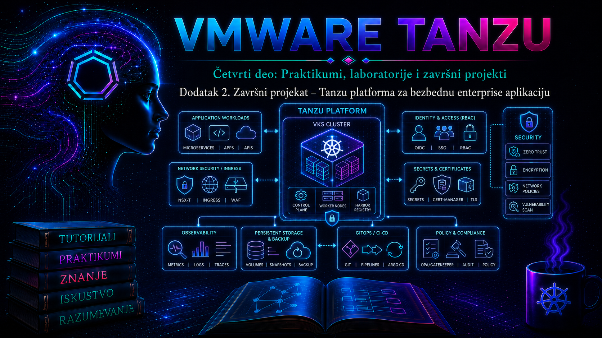

VMware & Tanzu

Projektni kontekst i svrha završnog integracionog projekta
Projekat obrađuje kontrolisanu modernizaciju poslovno kritične enterprise aplikacije od početne analize monolitnog sistema do projektovanja ciljane platforme zasnovane na VMware virtuelnoj infrastrukturi, Kubernetes okruženju, Tanzu komponentama, automatizovanom procesu izgradnje aplikacije, GitOps modelu isporuke, centralizovanom observability-ju i dokumentovanim postupcima za rollback, recovery i disaster recovery.
Predmet projekta nije nekritičko razlaganje monolita na veliki broj mikroservisa. Cilj je da se poslovni rizik smanji postepenom modernizacijom: najpre standardizacijom aplikativnog pakovanja i konfiguracije, zatim izdvajanjem jasno ograničenih funkcionalnih celina, uvođenjem kontejnera, deklarativnog upravljanja i automatizovane validacije, a tek potom kontrolisanim preusmeravanjem produkcionog saobraćaja na novu platformu.
Verzijski kontekst projekta zasniva se na VMware vSphere 8.0 Update 3 infrastrukturi, Tanzu Kubernetes Grid 2.5.x platformi, podržanoj Kubernetes verziji iz odgovarajućeg Tanzu Bill of Materials paketa, Tanzu Application Platform 1.12 za aplikativni supply chain, Argo CD stabilnoj grani za GitOps isporuku, Harbor registru kontejnerskih slika, PostgreSQL 16 bazi podataka, Prometheus i Grafana komponentama za metrike, OpenTelemetry Collector-u za telemetriju i Velero komponenti za backup Kubernetes objekata. Pre stvarne produkcione implementacije tačne build oznake moraju se potvrditi u aktuelnim VMware/Broadcom matricama kompatibilnosti i podrške.
Poslovni scenario
Organizacija i osnovna delatnost
Organizacija AdriaRetail Group je regionalna kompanija sa približno 850 zaposlenih, centralom u Beogradu, distributivnim centrom u Novom Sadu i mrežom od 46 prodajnih objekata u Srbiji i susednim tržištima. Kompanija posluje u oblasti veleprodaje i maloprodaje tehničke robe, a ključni poslovni procesi obuhvataju upravljanje katalogom, zalihama, porudžbinama, isporukama, reklamacijama i partnerskim nalozima.
Centralni poslovni sistem je aplikacija OrderHub, razvijena kao Java monolit i instalirana na dve virtuelne mašine iza postojećeg load balancer-a. Aplikacija pruža web interfejs zaposlenima i partnerski REST API koji koriste prodajni portali, skladišni sistemi i mobilne aplikacije kurira. Baza podataka se izvršava na zasebnom PostgreSQL serveru, dok se dokumenti i izvozni izveštaji čuvaju na NFS sistemu.
Postojeći problem
Svako izdanje aplikacije zahteva ručno pripremanje WAR paketa, kopiranje artefakta, promenu konfiguracionih datoteka i restart aplikativnog servisa. Razlike između razvojnog, testnog i produkcionog okruženja nisu formalno evidentirane. Pojedine poverljive vrednosti nalaze se u lokalnim konfiguracionim datotekama, a deo promena izvršavan je neposredno na serverima bez odgovarajućeg zapisa u sistemu za upravljanje verzijama.
Produkciona izdanja traju između dva i četiri sata i zahtevaju planirani prekid rada. Povratak na prethodnu verziju oslanja se na ručno sačuvani WAR paket i snapshot virtuelne mašine. Snapshot se pri tome koristi kao kratkotrajna zaštita tokom promene, iako ne predstavlja aplikativno konzistentan backup niti odgovarajuću zamenu za restore baze podataka.
Monitoring proverava dostupnost virtuelnih mašina i osnovnu iskorišćenost CPU-a i memorije, ali ne povezuje stanje infrastrukture sa stvarnim poslovnim funkcijama. Sistem može prijaviti da je server dostupan iako partneri ne mogu da kreiraju porudžbine zbog greške u autentikaciji, zasićenog connection pool-a ili neuspešne komunikacije sa bazom.
Poslovni razlog pokretanja projekta
Kompanija planira proširenje partnerskog portala i očekuje rast broja API zahteva za najmanje 60 procenata u narednih osamnaest meseci. Trenutni model isporuke ne može bezbedno da podrži češće funkcionalne promene, a svaki duži prekid direktno utiče na prijem porudžbina, obradu isporuka i ugovorene rokove prema partnerima.
Uprava je zato odobrila modernizaciju kojom treba omogućiti češća, manja i proverljiva izdanja, smanjiti vreme oporavka, eliminisati ručne konfiguracione razlike i obezbediti da stanje aplikacije može biti rekonstruisano iz kontrolisanih izvora.
Očekivani poslovni rezultat
- Produkcijska izdanja bez planiranog višesatnog prekida rada.
- Mogućnost kontrolisanog povratka na prethodnu poznatu ispravnu verziju.
- Smanjenje broja ručnih koraka i konfiguracionih odstupanja.
- Brže otkrivanje problema koji utiču na kreiranje i obradu porudžbina.
- Kontrolisano povećanje kapaciteta API servisa tokom vršnog opterećenja.
- Jasna evidencija ko je odobrio, izgradio i isporučio konkretnu verziju.
- Dokaziva sposobnost povratka aplikativne konfiguracije i poslovnih podataka.
Početno i ciljano stanje
Početno poslovno stanje
- OrderHub je kritičan za prijem partnerskih porudžbina i upravljanje zalihama.
- Promene se objavljuju približno jednom mesečno zbog visokog rizika implementacije.
- Produkcijsko izdanje zahteva zajedničko prisustvo aplikativnog, sistemskog i DBA tima.
- Poslovni vlasnik nema jedinstven pregled dostupnosti celog servisa.
- Uspeh izdanja potvrđuje se ograničenim ručnim testiranjem nakon restarta.
Početno tehničko stanje
| Oblast | Početno stanje | Glavni rizik |
|---|---|---|
| Aplikacija | Java monolit na dve virtuelne mašine | Velika jedinica promene i sporo vraćanje verzije |
| Konfiguracija | Lokalne datoteke sa ručnim razlikama | Nepoznato stvarno stanje i mogućnost izlaganja tajni |
| Deployment | Ručno kopiranje WAR paketa i restart | Greške operatora i nedosledan redosled koraka |
| Baza | Jedna PostgreSQL instanca sa dnevnim backup-om | Ograničena dostupnost i nedovoljno proveravan restore |
| Monitoring | Infrastrukturne provere bez aplikativnog konteksta | Kasno otkrivanje poslovnog uticaja |
| Rollback | Ručno vraćanje paketa i oslanjanje na VM snapshot | Nepouzdan povratak i rizik za podatke |
| Audit | Promene evidentirane u različitim tiketima i lokalnim zapisima | Nepotpuna sledljivost |
Ciljano poslovno stanje
Poslovni servis ostaje funkcionalno prepoznat kao OrderHub, ali se proces njegovog razvoja, isporuke i upravljanja menja. Promene se objavljuju u manjim celinama, prolaze automatizovane provere i prelaze u produkciju kroz odobrenu Git promenu. Poslovni vlasnik dobija dashboard koji povezuje raspoloživost API-ja, stopu uspešnih porudžbina, latenciju i greške sa stanjem platforme.
Ciljano tehničko stanje
Monolit se u prvoj fazi pakuje kao kontejner i izvršava kao servis orderhub-core. Funkcionalnost prijema partnerskih zahteva izdvaja se u servis orderhub-api, jer upravo taj deo ima različit profil skaliranja i najveći spoljašnji poslovni uticaj. PostgreSQL baza ostaje van Kubernetes klastera tokom prve faze kako bi se smanjio migracioni rizik, ali se prebacuje na redundantni PostgreSQL par sa kontrolisanim failover postupkom.
CI proces izgrađuje, testira, skenira i potpisuje image. GitOps repozitorijum čuva deklarativnu konfiguraciju okruženja. Argo CD usklađuje stanje klastera sa odobrenim Git stanjem. Kubernetes Deployment objekti omogućavaju postepenu zamenu podova, dok readiness, liveness i startup provere sprečavaju da neispravna instanca prerano primi saobraćaj. Kubernetes dokumentacija definiše Deployment kao deklarativni mehanizam za ažuriranje podova i ReplicaSet objekata, a rolling update kao postepenu zamenu instanci umesto istovremenog prekida celog servisa. :contentReference[oaicite:0]{index=0}
Šta se zadržava, menja i uvodi
| Status | Element | Obrazloženje |
|---|---|---|
| Zadržava se | Postojeći VMware vSphere klaster | Obezbeđuje raspoložive računarske, mrežne i storage resurse. |
| Zadržava se | Postojeći poslovni model i PostgreSQL šema | Redizajn domena i baze nije potreban za ostvarivanje prve faze modernizacije. |
| Menja se | Način pakovanja i isporuke aplikacije | WAR deployment zamenjuje se nepromenljivim kontejnerskim artefaktom. |
| Menja se | Upravljanje konfiguracijom | Konfiguracija se odvaja od image-a i vodi deklarativno. |
| Uklanja se | Direktno ručno menjanje produkcionih konfiguracija | Promene moraju imati pregled, odobrenje i istoriju. |
| Uvodi se | Tanzu Kubernetes Grid workload klaster | Standardizovano izvršavanje i upravljanje kontejnerskim workload-ima. |
| Uvodi se | Harbor registar | Kontrolisano skladištenje, skeniranje i distribucija image artefakata. |
| Uvodi se | Tanzu Application Platform supply chain | Standardizacija puta od izvornog koda do proverljivog artefakta. |
| Uvodi se | Argo CD | Deklarativna GitOps isporuka i detekcija odstupanja. |
| Uvodi se | Centralizovani metrics, logs i traces tok | Povezivanje poslovnog simptoma sa aplikativnim i infrastrukturnim uzrokom. |
| Migrira se | OrderHub aplikativni runtime | Sa postojećih aplikativnih VM-ova na Kubernetes platformu. |
Sadržaj izvan obuhvata
- Potpuno razlaganje monolita na mikroservise.
- Redizajn korisničkog interfejsa.
- Promena ERP i skladišnih sistema koji koriste OrderHub.
- Potpuna migracija baze podataka u Kubernetes.
- Aktivno-aktivna aplikacija između dva geografska centra.
- Zamena korporativnog direktorijuma identiteta.
- Automatsko odobravanje produkcijskih promena bez ljudske kontrole.
Zahtevi projekta
Funkcionalni zahtevi
- Partner mora moći da se autentikuje i kreira novu porudžbinu preko HTTPS API-ja.
- Zaposleni mora moći da pregleda, potvrdi i promeni status porudžbine.
- OrderHub mora da čita stanje artikala iz PostgreSQL baze i upisuje transakcije porudžbine.
- Sistem mora da generiše audit zapis za promenu statusa porudžbine.
- Administrator mora moći da odredi koja verzija aplikacije je aktivna u svakom okruženju.
- Neuspešno izdanje mora moći da se zaustavi ili vrati bez ručnog rekonfigurisanja svakog noda.
Tehnički zahtevi
- Produkcijski workload klaster mora imati najmanje tri control plane i tri worker noda raspoređena preko tri vSphere zone kvara.
- Minimalni broj aplikativnih replika za javni API mora biti tri.
- Svaki image mora imati jedinstveni nepromenljivi tag i digest.
- Produkcijski manifest ne sme koristiti tag
latest. - Konfiguracija mora biti odvojena od image-a.
- Poverljive vrednosti ne smeju biti sačuvane u otvorenom tekstu u Git repozitorijumu.
- Deployment mora imati definisane resource requests, limits i health probe provere.
- Svaka produkcijska promena mora biti povezana sa commit identifikatorom, image digest-om i odobrenim zahtevom za promenu.
Zahtevi dostupnosti i kontinuiteta
| Servis | Ciljana dostupnost | RTO | RPO |
|---|---|---|---|
| OrderHub partnerski API | 99,9% mesečno, izuzimajući odobrene prozore | 30 minuta | 5 minuta za transakcione podatke |
| Interni OrderHub portal | 99,5% mesečno | 60 minuta | 15 minuta |
| GitOps kontrola | Visoka operativna dostupnost | 4 sata | Poslednji potvrđeni Git commit |
| Observability platforma | Ne sme biti jedina tačka kvara aplikacije | 4 sata | 15 minuta za centralne zapise |
RTO od 30 minuta znači da OrderHub API nakon potvrđenog incidenta mora biti vraćen u prihvatljivo funkcionalno stanje u roku od 30 minuta. RPO od pet minuta znači da arhitektura, backup i replikacioni mehanizmi moraju ograničiti prihvatljiv gubitak potvrđenih transakcionih podataka na najviše pet minuta u scenariju za koji je taj cilj projektovan.
Zahtevi performansi i skalabilnosti
- API mora podržati bazno opterećenje od 120 zahteva u sekundi.
- Za kontrolisani test vršnog opterećenja cilj je 250 zahteva u sekundi u trajanju od 30 minuta.
- Devedeset peti percentil odgovora za čitanje kataloga treba da ostane ispod 500 milisekundi pri ugovorenom opterećenju.
- Devedeset peti percentil kreiranja porudžbine treba da ostane ispod dve sekunde, ne računajući nedostupnost spoljnog sistema.
- Horizontalno skaliranje API servisa dozvoljeno je od tri do dvanaest replika.
- Pragovi za skaliranje ne određuju se samo proizvoljnom CPU vrednošću, već se usklađuju sa rezultatima testova opterećenja, trajanjem zahteva, brojem aktivnih konekcija i baznom linijom.
Horizontal Pod Autoscaler koristi Kubernetes scale interfejs da menja broj replika podržanog workload objekta. U projektu se HPA primenjuje samo na stateless API komponentu, dok se pre uključivanja automatskog skaliranja moraju validirati resource requests, ponašanje connection pool-a i kapacitet baze. :contentReference[oaicite:1]{index=1}
Zahtevi za monitoring, logovanje i audit
- Pratiti uspešnost kreiranja porudžbina, ne samo HTTP dostupnost.
- Pratiti HTTP statusne kodove, latenciju, stopu grešaka i broj zahteva.
- Pratiti Kubernetes podove, restarte, raspoređivanje, resource pressure i stanje nodova.
- Pratiti PostgreSQL konekcije, replikaciono kašnjenje, trajanje upita i raspoloživi prostor.
- Prikupljati aplikativne, Kubernetes audit, ingress, Argo CD i Harbor zapise.
- Korelaciju obavljati preko vremenske oznake, verzije aplikacije, trace identifikatora i identifikatora porudžbine bez izlaganja poverljivih podataka.
- Alarm mora biti povezan sa poslovnim uticajem i runbook procedurom.
Bezbednosni zahtevi
- Administratorska autentikacija integriše se sa korporativnim direktorijumom
corp.adriaretail.example. - Privilegije se dodeljuju grupama, a ne pojedinačnim korisnicima, osim dokumentovanih emergency naloga.
- Produkcijski pristup zahteva višefaktorsku autentikaciju na administrativnim pristupnim tačkama.
- Servisni nalozi ne smeju se koristiti za interaktivnu prijavu.
- Tajne se čuvaju u centralnom secrets sistemu i u klaster se dostavljaju kontrolisanim mehanizmom.
- Harbor projekti moraju imati ograničene push i pull privilegije.
- Image mora biti skeniran, a kritične ranjivosti moraju blokirati promociju osim uz formalno prihvaćen izuzetak.
- NetworkPolicy pravila primenjuju podrazumevano ograničenje saobraćaja i izričito dozvoljavaju potrebne tokove.
- TLS je obavezan za spoljne i administrativne tokove.
- Privatni ključevi, tokeni i lozinke ne prikazuju se u dokumentaciji projekta.
Pretpostavke, ograničenja i kriterijumi prihvatanja
Pretpostavke
- Postojeći vSphere klaster ima dovoljno rezervnog kapaciteta za Tanzu management i workload komponente.
- DNS, NTP, PKI, direktorijum identiteta i centralni backup servis dostupni su kao korporativni servisi.
- Razvojni tim može da prilagodi aplikaciju za externalized configuration i zdravstvene endpoint-e.
- Postojeći poslovni API ugovori ostaju kompatibilni tokom prve faze migracije.
- Test podaci mogu biti anonimizovani i korišćeni u neprodukcijskom okruženju.
- Svaka promena baze ima unapred pripremljenu kompatibilnu strategiju i procenu povratnosti.
Ograničenja
- Produkcijski prekid tokom završnog preusmeravanja ograničen je na najviše 30 minuta.
- Nije dozvoljena istovremena promena aplikativne platforme i potpuna promena modela baze.
- Produkcijski podaci ne smeju se kopirati u razvojno okruženje bez anonimizacije.
- Javne cloud usluge nisu deo prve faze.
- Stari sistem mora ostati raspoloživ za kontrolisani povratak tokom stabilizacionog perioda od četrnaest dana.
Kriterijumi prihvatanja
| Oznaka | Kriterijum | Način dokazivanja |
|---|---|---|
| AC-01 | Partner može da kreira i pročita porudžbinu preko novog API endpoint-a. | Automatizovani funkcionalni test i zapis poslovne transakcije. |
| AC-02 | Rolling deployment ne prekida raspoloživost svih replika. | Kontrolisani rollout uz kontinuiranu sintetičku proveru. |
| AC-03 | GitOps sistem detektuje i ispravlja neodobreno odstupanje. | Kontrolisana promena u testnom namespace-u i Argo CD audit zapis. |
| AC-04 | Neispravna verzija može biti vraćena na prethodno odobreno Git stanje. | Rollback test sa proverom aplikativne i podatkovne kompatibilnosti. |
| AC-05 | API servis horizontalno povećava broj replika pri testnom opterećenju. | Load test, HPA događaji i metrike kapaciteta. |
| AC-06 | Kritične tajne nisu prisutne u image-u, Git istoriji ni javnim logovima. | Skeniranje repozitorijuma, image slojeva i log uzorka. |
| AC-07 | Backup PostgreSQL podataka može biti vraćen u izolovano okruženje. | Dokumentovan restore test i validacija kontrolnog skupa podataka. |
| AC-08 | Kubernetes objekti i persistent konfiguracija mogu biti rekonstruisani. | Velero restore test i poređenje sa Git deklaracijom. |
| AC-09 | Neovlašćena uloga ne može menjati produkcijske resurse. | Negativni RBAC test i audit zapis odbijene operacije. |
| AC-10 | Monitoring prijavljuje poslovni i tehnički uticaj simuliranog incidenta. | Alarm, dashboard, povezani logovi i incident zapis. |
| AC-11 | Failover ili recovery baze završava unutar definisanog RTO cilja. | Kontrolisana vežba i vremenski zapis svih koraka. |
| AC-12 | Konačno stanje je dokumentovano i može ga preuzeti operativni tim. | Odobren inventar, runbook, matrica pristupa i operativna kontrolna lista. |
Inventar, verzijski kontekst i standardi imenovanja
Ključni inventar
| Objekat | Naziv | Uloga | Verzijski kontekst |
|---|---|---|---|
| vCenter | vcsa01.mgmt.adriaretail.example |
Upravljanje virtuelnom infrastrukturom | VMware vCenter Server 8.0 U3 |
| vSphere klaster | CL-BG-PROD-01 |
Računarski resursi i zone kvara | VMware vSphere 8.0 U3 |
| TKG management klaster | tkg-mgmt-bg01 |
Upravljanje životnim ciklusom workload klastera | Tanzu Kubernetes Grid 2.5.x |
| Produkcijski workload klaster | tkg-wld-prod01 |
OrderHub produkcijski workload | Podržana Kubernetes verzija iz TKG BOM-a |
| Test workload klaster | tkg-wld-test01 |
Integraciona i preprodukcijska validacija | Ista podržana minor verzija kao produkcija |
| Harbor | harbor01.apps.adriaretail.example |
Registar i kontrola image artefakata | Verzija podržana uz izabrani Tanzu paket |
| Git servis | git01.dev.adriaretail.example |
Izvorni kod i GitOps repozitorijumi | Korporativna podržana verzija |
| Argo CD | argocd01.platform.adriaretail.example |
GitOps kontrola željenog stanja | Stabilna podržana grana potvrđena pre implementacije |
| Primarna baza | pg-order-prod01.db.adriaretail.example |
Primarna PostgreSQL instanca | PostgreSQL 16 |
| Standby baza | pg-order-prod02.db.adriaretail.example |
Replikaciona i failover instanca | PostgreSQL 16 |
| Observability | obs01.ops.adriaretail.example |
Centralni pristup dashboard-ima i alarmima | Prometheus, Grafana i OpenTelemetry |
| Administratorska radna stanica | adm-jump01.mgmt.adriaretail.example |
Kontrolisana administrativna pristupna tačka | Hardened Linux sistem |
Standard imenovanja
- Klasteri:
<platforma>-<uloga>-<lokacija><broj>. - Virtuelne mašine:
<servis>-<okruženje><broj>. - Namespace objekti:
<aplikacija>-<okruženje>. - Harbor projekti:
<tim>-<okruženje>. - Servisni nalozi:
svc-<sistem>-<funkcija>. - Grupe:
GRP-<PLATFORMA>-<ULOGA>-<OKRUŽENJE>. - Backup poslovi:
BKP-<SISTEM>-<TIP>-<UČESTALOST>. - Alarmi:
ALM-<SERVIS>-<USLOV>-<SEVERITY>.
Aplikativni objekti
- Namespace:
orderhub-prod,orderhub-testiorderhub-dev. - Deployment:
orderhub-coreiorderhub-api. - Service:
orderhub-core-svciorderhub-api-svc. - Ingress host:
api.orderhub.adriaretail.example. - Harbor repozitorijumi:
orderhub-prod/orderhub-coreiorderhub-prod/orderhub-api. - Argo CD aplikacije:
orderhub-prodiorderhub-test.
Ciljana arhitektura rešenja
Logička arhitektura
Partneri i interni korisnici
|
v
Korporativni DNS i spoljašnji load balancer
|
v
Kubernetes ingress sloj u tkg-wld-prod01
|
+------------------------+
| |
v v
orderhub-api orderhub-core
| |
+------------+-----------+
|
v
PostgreSQL servisni endpoint
|
+---------+---------+
| |
v v
pg-order-prod01 pg-order-prod02
primarni standby
Izvorni kod --> TAP/CI supply chain --> Harbor
|
GitOps repozitorijum --> Argo CD ----+
|
v
Kubernetes klaster
Aplikacija, platforma i baza
|
v
OpenTelemetry / metrics / logs / audit
|
v
Prometheus, Grafana, centralni log sistem i alarmiVirtuelna i fizička arhitektura
Produkcijski Kubernetes control plane i worker nodovi raspoređuju se preko tri vSphere zone kvara: AZ-BG-01, AZ-BG-02 i AZ-BG-03. Zone odgovaraju različitim ESXi host grupama i različitim domenima održavanja. Anti-affinity pravila sprečavaju da sve replike kritičnog servisa budu raspoređene na isti worker ili istu zonu kada kapacitet to dozvoljava.
Tanzu management klaster nije u putanji svakog aplikativnog zahteva, ali je kritičan za upravljanje životnim ciklusom klastera. Njegova privremena nedostupnost ne sme automatski zaustaviti postojeći OrderHub workload, ali ograničava operacije kreiranja, nadogradnje i oporavka klastera. Zbog toga se management komponente štite backup-om konfiguracije, kontrolisanim pristupom i dokumentovanim postupkom rekonstrukcije.
Mrežna arhitektura
| VLAN | Naziv | Segment | Gateway | Svrha |
|---|---|---|---|---|
| 110 | VLAN-MGMT |
10.40.10.0/24 |
10.40.10.1 |
vCenter, administrativni pristup i platform management |
| 120 | VLAN-TKG-NODES |
10.40.20.0/23 |
10.40.20.1 |
Kubernetes control plane i worker nodovi |
| 130 | VLAN-APP-VIP |
10.40.30.0/24 |
10.40.30.1 |
Ingress i servisne virtualne adrese |
| 140 | VLAN-DATABASE |
10.40.40.0/24 |
10.40.40.1 |
PostgreSQL i database servisni endpoint |
| 150 | VLAN-BACKUP |
10.40.50.0/24 |
10.40.50.1 |
Backup i restore saobraćaj |
| 160 | VLAN-OBS |
10.40.60.0/24 |
10.40.60.1 |
Monitoring, logovi i telemetrija |
| 170 | VLAN-REPLICATION |
10.40.70.0/24 |
10.40.70.1 |
PostgreSQL replikacija i budući DR tokovi |
Ključni komunikacioni tokovi
| Izvor | Odredište | Protokol/port | Svrha | Validacija |
|---|---|---|---|---|
| Spoljašnji load balancer | Ingress VIP | TCP 443 | HTTPS pristup OrderHub API-ju | TLS i sintetički API test |
| Worker nodovi | PostgreSQL endpoint | TCP 5432 | Aplikativna komunikacija sa bazom | Test konekcije i transakcioni test |
| TAP/CI komponente | Harbor | TCP 443 | Push i pull kontejnerskih image-a | Push test, digest i skeniranje |
| Argo CD | Git servis | TCP 443 ili 22 | Čitanje željenog stanja | Repo connection status |
| Argo CD | Kubernetes API | TCP 6443 | Usklađivanje resursa | Sync i audit zapis |
| Kubernetes i aplikacija | Observability endpoint-i | TCP 4317, 4318 i 443 | OTLP telemetrija i metrics scraping | Prisustvo metrike, loga i trace-a |
| Administratorska stanica | Administrativni endpoint-i | TCP 443, 22 i 6443 prema ulozi | Kontrolisana administracija | MFA, RBAC i audit događaj |
| Backup sistem | PostgreSQL i object storage | Ograničeni servisni portovi | Backup i restore tok | Uspeh posla i restore test |
Firewall pravila se odobravaju po principu konkretan izvor, konkretno odredište i konkretna svrha. Nije dozvoljeno trajno pravilo tipa any-to-any između Kubernetes, database, management i backup zona.
Storage arhitektura
Kubernetes nodovi koriste vSphere datastore klase DS-TKG-GOLD i DS-TKG-SILVER. Klasa gold-rwo namenjena je kritičnim persistent workload-ima koji zahtevaju viši nivo performansi i zaštite, dok je silver-rwo namenjena pomoćnim platformskim komponentama. OrderHub aplikativni podovi ostaju stateless; poslovni podaci se ne čuvaju u lokalnom filesystem-u kontejnera.
Izveštaji i privremeni izvozni fajlovi preusmeravaju se na podržani object ili shared storage servis. Time se sprečava vezivanje aplikativne instance za određeni worker nod i omogućava bezbedna zamena podova.
Arhitektura identiteta i bezbednosti
Korporativni identitet ostaje autoritativni izvor za ljudske naloge. Grupe GRP-TKG-PLATFORM-ADMINS, GRP-ORDERHUB-OPERATORS, GRP-ORDERHUB-DEVELOPERS i GRP-SECURITY-AUDITORS mapiraju se na precizno definisane uloge.
Argo CD pristup ograničava se RBAC politikama. Argo CD podržava ograničavanje pristupa svojim resursima, dok GitOps model omogućava da CI proces promoviše deklarativnu promenu u Git bez direktnih širokih privilegija prema produkcijskom Kubernetes API-ju. Automatska sinhronizacija koristi se tek nakon što su definisane zaštite, obavezni pregled promene i dozvoljeni opseg resursa. :contentReference[oaicite:2]{index=2}
Servisni nalozi obuhvataju svc-tap-build, svc-harbor-push, svc-argocd-sync, svc-orderhub-db, svc-otel-export i svc-velero-backup. Svaki nalog ima jednog tehničkog vlasnika, dokumentovanu namenu, ograničene privilegije i definisan ciklus rotacije poverljivih vrednosti.
Arhitektura dostupnosti
- Tri Kubernetes control plane noda preko tri zone kvara.
- Najmanje tri worker noda za produkcijski workload.
- Najmanje tri replike
orderhub-apiservisa. - Pod anti-affinity i PodDisruptionBudget za kritične aplikativne komponente.
- Readiness provera uklanja neispravnu repliku iz servisnog saobraćaja.
- Load balancer proverava ingress endpoint, a ne samo dostupnost IP adrese.
- PostgreSQL primarni i standby server nalaze se u odvojenim zonama kvara.
Backup, recovery i disaster recovery arhitektura
Backup strategija kombinuje više slojeva zato što nijedan pojedinačni mehanizam ne štiti sve vrste stanja. Git čuva deklarativnu konfiguraciju, Harbor zadržava odobrene image artefakte, Velero štiti Kubernetes resurse i podržane persistent volumene, dok PostgreSQL koristi bazni backup i kontinuirano arhiviranje WAL zapisa radi oporavka do određene vremenske tačke.
- Dnevni PostgreSQL full backup sa WAL arhiviranjem na svakih nekoliko minuta.
- Dnevni Velero backup produkcijskih namespace objekata.
- Immutable kopija kritičnih backup podataka sa retention periodom od 30 dana.
- Mesečna izdvojena kopija sa retention periodom od 12 meseci.
- Kvartalni restore test baze u izolovanom okruženju.
- Kvartalni restore test Kubernetes resursa.
- Polugodišnja DR vežba sa rekonstrukcijom ključnog poslovnog servisa.
Primarna DR strategija prve faze je pilot-light: sekundarna lokacija poseduje mrežne, DNS, pristupne i storage preduslove, kopiju Git repozitorijuma, replicirane backup artefakte i dokumentovan redosled kreiranja workload klastera. Produkcijski klaster se ne održava trajno aktivnim u punom kapacitetu, čime se prihvata duži DR RTO od četiri sata za katastrofalni gubitak primarne lokacije.
Monitoring i observability arhitektura
Monitoring se organizuje oko poslovnog servisa, a ne oko izolovanih servera. Dashboard OrderHub Service Overview prikazuje broj zahteva, stopu uspešnih porudžbina, latenciju, greške, aktivnu aplikativnu verziju, broj replika, stanje baze i replikaciono kašnjenje.
- Prometheus prikuplja aplikativne i Kubernetes metrike.
- Grafana prikazuje poslovne, aplikativne i infrastrukturne dashboard-e.
- OpenTelemetry Collector prima metrike, logove i trace podatke.
- Centralni log sistem čuva aplikativne, ingress, audit, Argo CD i platform logove.
- Alertmanager ili korporativni event sistem prosleđuje alarme odgovarajućoj dežurnoj ulozi.
- Sintetička provera izvršava kontrolisani API tok bez kreiranja stvarne poslovne obaveze.
Tačke integracije i zavisnosti
| Integracija | Zavisnost | Posledica nedostupnosti | Način provere |
|---|---|---|---|
| TAP/CI prema Git servisu | DNS, TLS i servisni identitet | Novi build se ne pokreće | Webhook događaj i pipeline status |
| TAP/CI prema Harbor-u | Registry pristup i sertifikat | Image ne može biti objavljen | Push, pull i digest provera |
| Argo CD prema GitOps repozitorijumu | Repo kredencijali i mreža | Željeno stanje se ne osvežava | Repo connection i refresh status |
| Argo CD prema workload klasteru | Kubernetes API i RBAC | Promena se ne primenjuje | Sync status i audit log |
| Kubernetes prema Harbor-u | DNS, TLS i image pull secret | Pod ulazi u ImagePullBackOff stanje | Pod events i kontrolisani pull |
| OrderHub prema PostgreSQL-u | NetworkPolicy, firewall, TLS i kredencijali | Porudžbine se ne čitaju ili ne upisuju | Health endpoint i transakcioni test |
| OrderHub prema observability sistemu | Collector endpoint i export konfiguracija | Servis radi, ali operativni uvid je smanjen | Kontrolni trace, log i metrika |
| Velero prema object storage-u | Bucket, mreža i servisni identitet | Backup Kubernetes objekata nije dostupan | Backup status i restore test |
Svaka integracija dobija vlasnika, tehničku tačku provere, alarm i runbook. Time se izbegava situacija u kojoj dva tima potvrđuju da su njihove komponente pojedinačno dostupne, dok poslovni tok između njih ostaje neispravan.
Plan resursa
| Komponenta | Početni resursi | Rezerva i napomena |
|---|---|---|
| TKG management control plane | 3 VM-a, po 4 vCPU, 16 GB RAM | Rasporediti preko zona kvara |
| TKG management worker | 3 VM-a, po 8 vCPU, 32 GB RAM | Platformske i lifecycle komponente |
| Produkcijski control plane | 3 VM-a, po 4 vCPU, 16 GB RAM | Bez aplikativnih workload-a |
| Produkcijski worker | 3 VM-a, po 16 vCPU, 64 GB RAM | Početni N+1 kapacitet i mogućnost dodavanja nodova |
| Testni worker | 3 VM-a, po 8 vCPU, 32 GB RAM | Integracioni i load test sa kontrolisanim granicama |
| PostgreSQL serveri | 2 VM-a, po 8 vCPU, 32 GB RAM | Odvojeni data, WAL i backup diskovi |
| Harbor | 3 servisne instance ili podržana HA topologija | Kapacitet najmanje 2 TB uz retention politiku |
Vrednosti predstavljaju početnu projektnu osnovu, a ne univerzalni konačni sizing. Pre produkcije moraju se potvrditi rezultatima testiranja, baznim merenjima postojeće aplikacije, zahtevima podržanih Tanzu komponenti i raspoloživim vSphere kapacitetom. Produkcijski plan ne sme računati ukupni fizički kapacitet kao potpuno raspoloživ; mora zadržati rezervu za otkaz hosta, rolling održavanje i privremeno povećanje broja replika tokom deployment-a.
Plan implementacije i migracije
Redosled implementacije
- Potvrda kompatibilnosti verzija, licenci, sertifikata i raspoloživog kapaciteta.
- Priprema DNS, NTP, PKI, VLAN, firewall i load balancer preduslova.
- Priprema vSphere zona kvara, foldera, resource pool objekata i storage politika.
- Implementacija Tanzu management klastera.
- Kreiranje testnog i produkcijskog workload klastera.
- Primena osnovnog hardening-a, RBAC-a, namespace kvota i NetworkPolicy modela.
- Implementacija Harbor registra i projekata.
- Implementacija TAP supply chain-a i integracija sa Git servisom i Harbor-om.
- Implementacija Argo CD-a i povezivanje GitOps repozitorijuma.
- Implementacija centralnog observability i alerting toka.
- Priprema PostgreSQL primarnog i standby servera.
- Kontejnerizacija
orderhub-corekomponente. - Izdvajanje i kontejnerizacija
orderhub-apikomponente. - Deploy u razvojno, zatim testno okruženje.
- Funkcionalna, integraciona, bezbednosna i load validacija.
- Probna migracija podataka i test povratka.
- Produkcijsko inicijalno postavljanje bez korisničkog saobraćaja.
- Kontrolisani canary ili ograničeni partnerski saobraćaj.
- Preusmeravanje kompletnog saobraćaja nakon potvrde kriterijuma.
- Stabilizacioni period, pojačani monitoring i formalno operativno preuzimanje.
Plan migracije aplikacije
Migracija koristi strangler pristup. Prvi korak uvodi kontejnerizovani orderhub-core uz očuvanje postojeće poslovne logike. Drugi korak izdvaja orderhub-api jer je to komponenta koja zahteva nezavisno skaliranje i izložena je partnerima. Stari i novi endpoint privremeno rade paralelno iza load balancer pravila, ali samo jedan put obrađuje određenu produkcijsku transakciju.
Database migracije moraju biti kompatibilne najmanje sa trenutnom i prethodnom aplikativnom verzijom tokom prozora povratka. Destruktivno uklanjanje kolone ili promenu tipa podatka nije dozvoljeno u istom izdanju u kojem se uvodi nova aplikativna zavisnost. Primenjuje se obrazac proširi, migriraj, potvrdi, pa tek potom ukloni.
Plan preusmeravanja saobraćaja
- Smanjiti DNS TTL najmanje 24 sata pre planirane promene.
- Potvrditi da nova platforma obrađuje sintetičke i interne testne zahteve.
- Usmeriti ograničenu grupu test partnera na novi API.
- Pratiti stopu grešaka, latenciju, konekcije baze i poslovne transakcije.
- Povećavati udeo saobraćaja samo kada su prethodni pragovi prihvatljivi.
- Zaustaviti promociju pri prekoračenju unapred definisanih kriterijuma.
- Sačuvati mogućnost vraćanja load balancer pravila na stari endpoint.
Plan validacije, rollback-a i oporavka
Plan validacije
- Validacija infrastrukture: vSphere resursi, nodovi, storage klase i mrežna povezanost.
- Validacija platforme: Kubernetes API, DNS, ingress, registry pristup i RBAC.
- Validacija supply chain-a: commit, build, test, scan, potpisivanje i objavljivanje image-a.
- Validacija GitOps-a: detekcija promene, sync, drift i audit.
- Validacija aplikacije: autentikacija, katalog, kreiranje porudžbine i promena statusa.
- Validacija podataka: konzistentnost kontrolnih zapisa i ponašanje pri ponovljenom zahtevu.
- Validacija dostupnosti: gubitak poda, worker noda i database standby aktivacija.
- Validacija performansi: bazno, vršno i produženo opterećenje.
- Validacija backup-a: završetak posla nije dovoljan bez restore testa.
- Validacija observability-ja: metrika, log, trace, alarm i incident tok.
Plan rollback-a
Primarni aplikativni rollback izvodi se vraćanjem GitOps repozitorijuma na prethodni odobreni image digest i kompatibilnu konfiguraciju. Argo CD podržava sinhronizaciju deklarativnog stanja i evidenciju istorije, dok Kubernetes rollout mehanizmi omogućavaju pregled i povratak revizije Deployment objekta. U ovom projektu Git revert predstavlja preferirani izvor trajnog povratka, jer se time usklađuju Git i stanje klastera; neposredni kubectl rollout undo dozvoljen je kao hitna stabilizaciona mera samo uz naknadno usklađivanje Git deklaracije. :contentReference[oaicite:3]{index=3}
Rollback aplikacije ne pokreće se automatski kada nova verzija sadrži nepovratnu promenu baze. Pre povratka administrator i DBA moraju potvrditi kompatibilnost prethodne verzije sa trenutnom šemom i proceniti da li je potreban restore podataka ili posebna korektivna migracija.
Kriterijumi za aktiviranje rollback-a
- Stopa neuspešnog kreiranja porudžbina prelazi odobreni prag tokom pet uzastopnih minuta.
- Latencija značajno odstupa od potvrđene bazne linije i utiče na ugovoreni servis.
- Nova verzija izaziva nekompatibilnost sa bazom ili spoljnim sistemom.
- Readiness provere sprečavaju formiranje minimalnog broja raspoloživih replika.
- Bezbednosna kontrola otkriva kritičnu ranjivost ili izlaganje tajne.
Plan recovery-ja
- Potvrditi simptom i poslovni uticaj.
- Zaustaviti dalju promociju ili promenu saobraćaja.
- Sačuvati logove, događaje, metrike i Git identifikatore.
- Izolovati pogođenu komponentu bez uništavanja dokaza.
- Vratiti funkcionalnost restartom, rescheduling-om, failover-om ili zamenom neispravne instance.
- Izvršiti rollback samo ako je problem povezan sa promenom i ako je povratak podatkovno bezbedan.
- Izvršiti restore kada je stvarno oštećeno ili izgubljeno stanje.
- Ponoviti poslovne i tehničke validacione testove.
- Pratiti sistem u pojačanom režimu najmanje tokom dogovorenog stabilizacionog perioda.
Tačke povratka
- Prethodni odobreni Git commit.
- Prethodni odobreni image digest u Harbor-u.
- Prethodna kompatibilna verzija konfiguracije.
- PostgreSQL point-in-time recovery tačka pre neuspešne promene podataka.
- Prethodna load balancer konfiguracija koja usmerava saobraćaj na stari sistem.
- Velero backup pre platformskih promena visokog rizika.
Projektni rizici i mere kontrole
| Rizik | Verovatnoća | Uticaj | Kontrolna mera |
|---|---|---|---|
| Nekompatibilnost verzija Tanzu komponenti | Srednja | Visok | Potvrda BOM-a, matrice kompatibilnosti i probna implementacija. |
| Nedovoljan vSphere kapacitet tokom otkaza hosta | Srednja | Visok | N+1 proračun, reservation pregled i load test. |
| Promena baze onemogućava rollback aplikacije | Srednja | Kritičan | Expand-contract migracije i test kompatibilnosti dve verzije. |
| GitOps automatski primenjuje pogrešnu promenu | Niska do srednja | Visok | Zaštićene grane, obavezni pregled, policy provere i ograničen auto-sync. |
| Tajna vrednost ulazi u Git istoriju | Srednja | Visok | Secret scanning, centralni vault i postupak hitne rotacije. |
| HPA preoptereti bazu povećanjem replika | Srednja | Visok | Ograničen maksimalni broj replika i kontrola connection pool-a. |
| Monitoring proizvodi lažno pozitivne alarme | Srednja | Srednji | Bazna linija, korelacija signala i periodično podešavanje pragova. |
| Backup postoji, ali restore ne uspeva | Srednja | Kritičan | Obavezni periodični restore test i čuvanje izveštaja. |
| Predugo paralelno održavanje starog i novog sistema | Srednja | Srednji | Definisan datum odluke i kriterijumi za gašenje starog runtime-a. |
Preduslovi za početak implementacije
- Odobrena projektna i bezbednosna arhitektura.
- Potvrđen vlasnik poslovnog servisa i tehnički vlasnik platforme.
- Potvrđene podržane verzije i licence.
- Rezervisan vSphere CPU, memorijski i storage kapacitet.
- Kreirani VLAN-ovi, rutiranje i precizna firewall pravila.
- Rezervisani DNS nazivi i IP adrese.
- Dostupni NTP i PKI servisi.
- Kreirane direktorijumske grupe i odobren model privilegija.
- Pripremljen administrativni jump host.
- Kreirani Git repozitorijumi za aplikativni kod, supply chain i GitOps konfiguraciju.
- Definisana lokacija za backup i immutable kopije.
- Pripremljeni anonimizovani testni podaci.
- Odobren plan migracije, rollback-a i komunikacije tokom promene.
- Dogovoren produkcijski prozor i lista odgovornih uloga.
Projektni repozitorijumi
orderhub-source/
├── orderhub-core/
├── orderhub-api/
├── tests/
├── supply-chain/
└── documentation/
orderhub-gitops/
├── base/
│ ├── orderhub-core/
│ └── orderhub-api/
├── environments/
│ ├── dev/
│ ├── test/
│ └── prod/
├── policies/
└── runbooks/
Tajne vrednosti se ne čuvaju u prikazanoj strukturi. Dokumentacija koristi oznaku [TAJNA VREDNOST NIJE PRIKAZANA], dok se stvarne vrednosti preuzimaju iz odobrenog sistema za upravljanje tajnama.
Kontrolna tačka arhitekture i pripreme
| Kontrolna oblast | Obavezno stanje pre implementacije | Status |
|---|---|---|
| Zahtevi | Poslovni, funkcionalni, tehnički, bezbednosni i operativni zahtevi imaju vlasnika i merljiv način provere. | Spremno za formalno odobrenje |
| Obuhvat | Potvrđeno je šta se zadržava, menja, migrira i ostaje izvan projekta. | Definisano |
| Arhitektura | Projektovane su logička, virtuelna, mrežna, storage, bezbednosna, dostupnosna, backup i monitoring arhitektura. | Definisano |
| Inventar i imenovanje | Ključni sistemi, klasteri, servisi, mreže, nalozi i objekti imaju dosledne nazive. | Definisano |
| Zavisnosti | Za svaku kritičnu integraciju poznati su preduslovi, posledica kvara i način provere. | Definisano |
| Rizici | Rizici imaju vlasnika, procenjen uticaj i kontrolnu meru. | Evidentirano |
| Implementacija | Utvrđen je redosled kojim se izbegava zavisnost od još nepostojeće komponente. | Planirano |
| Migracija | Definisani su pilot, postepeno preusmeravanje i stabilizacioni period. | Planirano |
| Validacija | Kriterijumi prihvatanja imaju funkcionalne, integracione, bezbednosne i recovery dokaze. | Planirano |
| Rollback i recovery | Poznate su tačke povratka, ograničenja baze, odgovorne uloge i kriterijumi aktiviranja. | Planirano |
| Spremnost okruženja | Implementacija može početi tek nakon potvrde kapaciteta, mreže, identiteta, sertifikata, backup lokacije i produkcijskog prozora. | Uslovno spremno |
Arhitektonska faza smatra se završenom kada svi tehnički timovi rade prema istoj topologiji, istim nazivima, istim mrežnim i bezbednosnim pravilima, istim kriterijumima prihvatanja i istim tačkama povratka. Implementacija ne počinje na osnovu pretpostavke da će se kritične zavisnosti rešavati naknadno.
Kontrolisani početak implementacione faze
Implementacija počinje tek nakon formalnog zatvaranja arhitektonske kontrolne tačke. Projektni tim ne prelazi neposredno na instalaciju proizvoda, već prvo potvrđuje da su verzije, kapaciteti, mrežni tokovi, sertifikati, identiteti i tačke povratka usklađeni sa projektovanom arhitekturom. Time se sprečava da se problemi sa osnovnim infrastrukturnim servisima pogrešno dijagnostikuju kao greške Tanzu, Kubernetes, GitOps ili aplikativnih komponenti.
Sve administrativne operacije izvršavaju se sa kontrolisane radne stanice adm-jump01.mgmt.adriaretail.example. Administrator koristi lični korporativni nalog sa višefaktorskom autentikacijom za interaktivni pristup, dok se automatizacija izvršava pod namenskim servisnim nalozima. Direktna upotreba zajedničkog administratorskog naloga nije dozvoljena osim kroz dokumentovanu emergency proceduru.
Provera alata i verzijskog konteksta
Na administrativnoj radnoj stanici instalirani su alati tanzu, kubectl, helm, argocd, govc, git, curl, openssl, velero i odobreni klijent sistema za upravljanje tajnama. Verzija svakog klijenta mora biti podržana za odgovarajuću serversku komponentu.
tanzu version
kubectl version --client
helm version
argocd version --client
govc version
velero version --client-only
git --version
openssl versionOčekuje se da sve komande vrate verziju bez greške i da se ona podudara sa verzijskom matricom odobrenom u arhitektonskoj dokumentaciji. Ako se otkrije nepodržana verzija, implementacija se zaustavlja pre bilo kakve promene infrastrukture. Lokalni rollback sastoji se od uklanjanja neodgovarajućeg klijenta i vraćanja prethodnog paketa iz internog repozitorijuma.
Provera osnovnih korporativnih servisa
dig +short vcsa01.mgmt.adriaretail.example
dig +short harbor01.apps.adriaretail.example
dig +short git01.dev.adriaretail.example
dig +short api.orderhub.adriaretail.example
timedatectl status
chronyc sources -v
openssl s_client \
-connect harbor01.apps.adriaretail.example:443 \
-servername harbor01.apps.adriaretail.example \
-verify_return_error </dev/nullDNS odgovori moraju vraćati unapred rezervisane adrese, vremenska razlika između administratorske stanice, vCenter-a, Kubernetes nodova, Git servisa i registra mora biti unutar korporativno dozvoljene tolerancije, a lanac sertifikata mora biti pouzdan. NTP odstupanje može izazvati probleme sa tokenima, TLS sesijama, audit zapisima i korelacijom događaja, pa se ne tretira kao beznačajno upozorenje.
Priprema vSphere infrastrukture
Provera raspoloživog kapaciteta
Na sistemu vcsa01.mgmt.adriaretail.example proveravaju se stanje klastera CL-BG-PROD-01, povezivost ESXi hostova, aktivni alarmi, datastore kapacitet i mogućnost održavanja N+1 rezerve. Implementacija ne sme potrošiti kapacitet potreban za oporavak nakon otkaza jednog fizičkog hosta ili za privremeno povećanje broja podova tokom rolling deployment-a.
export GOVC_URL='https://vcsa01.mgmt.adriaretail.example'
export GOVC_USERNAME='administrator@vsphere.local'
export GOVC_PASSWORD='[TAJNA VREDNOST NIJE PRIKAZANA]'
export GOVC_INSECURE='0'
govc about
govc cluster.info -json CL-BG-PROD-01
govc datastore.info DS-TKG-GOLD
govc datastore.info DS-TKG-SILVER
govc alarmsAdministratorski nalog prikazan u primeru koristi se samo ako je to odobreno za početnu infrastrukturnu fazu. U produkcionom radu preporučuje se delegirana vCenter uloga sa privilegijama potrebnim za Tanzu lifecycle operacije. Poverljiva vrednost se unosi kroz bezbedni credential helper ili kratkotrajnu sesiju, a ne upisuje u shell istoriju ili skriptu.
Kreiranje organizacionih objekata
U vCenter inventaru kreiraju se folderi TKG-MGMT, TKG-WORKLOAD-PROD i TKG-WORKLOAD-TEST, kao i resource pool objekti koji ograničavaju i razdvajaju management, produkcijske i testne resurse. Granice resource pool-a ne smeju biti postavljene tako restriktivno da izazovu CPU ready ili memorijsko zagušenje tokom otkaza hosta.
govc folder.create /DC-BG/vm/TKG-MGMT
govc folder.create /DC-BG/vm/TKG-WORKLOAD-PROD
govc folder.create /DC-BG/vm/TKG-WORKLOAD-TEST
govc pool.create /DC-BG/host/CL-BG-PROD-01/Resources/RP-TKG-MGMT
govc pool.create /DC-BG/host/CL-BG-PROD-01/Resources/RP-TKG-PROD
govc pool.create /DC-BG/host/CL-BG-PROD-01/Resources/RP-TKG-TESTPosle kreiranja proveravaju se pune inventarske putanje i dozvole. Ako je objekat kreiran na pogrešnoj lokaciji, ne nastavlja se sa instalacijom klastera. Lokalni rollback podrazumeva brisanje samo praznog i još nekorišćenog foldera ili resource pool-a. Objekat koji već sadrži virtuelne mašine ne briše se bez zasebnog plana migracije.
Zone kvara i pravila raspoređivanja
ESXi hostovi se raspoređuju u tri potvrđene zone: AZ-BG-01, AZ-BG-02 i AZ-BG-03. Zone moraju odgovarati stvarnim domenima kvara, a ne samo logičkim oznakama. Control plane i worker nodovi raspoređuju se tako da gubitak jedne zone ne ukloni većinu control plane članova niti sve replike poslovnog servisa.
Pre nastavka se proverava da DRS pravila ne sprečavaju neophodan failover. Previše strogo pravilo tipa must run on može smanjiti dostupnost ako cela host grupa postane nedostupna. Gde poslovni zahtev dozvoljava, koristi se preferencijalno pravilo koje čuva raspored, ali ostavlja mogućnost oporavka u drugoj zoni.
Priprema mreže, load balancer-a i firewall pravila
Implementacija mrežnih segmenata
Mrežni tim kreira i validira port grupe za segmente VLAN-MGMT, VLAN-TKG-NODES, VLAN-APP-VIP, VLAN-DATABASE, VLAN-BACKUP, VLAN-OBS i VLAN-REPLICATION. MTU vrednost mora biti dosledna duž cele komunikacione putanje. Nije dovoljno potvrditi MTU samo na vSphere Distributed Switch objektu ako fizički switch, firewall ili storage putanja koriste drugačiju vrednost.
ping -c 4 10.40.20.1
ping -c 4 10.40.30.1
ping -c 4 10.40.40.1
tracepath 10.40.40.20
nc -vz harbor01.apps.adriaretail.example 443
nc -vz git01.dev.adriaretail.example 443
nc -vz pg-order-prod01.db.adriaretail.example 5432Provere se izvršavaju sa odgovarajućeg izvora, ne samo sa administratorske stanice. Na primer, uspešna konekcija sa jump hosta prema PostgreSQL-u ne dokazuje da će worker nodovi ili podovi imati isti pristup. Nakon kreiranja workload klastera test se ponavlja iz dijagnostičkog poda sa odgovarajućom NetworkPolicy politikom.
Priprema servisnih virtualnih adresa
U segmentu 10.40.30.0/24 rezervišu se virtualne adrese za ingress i platform servise. Produkcijski OrderHub koristi DNS ime api.orderhub.adriaretail.example. Spoljašnji load balancer prosleđuje samo TCP 443 prema ingress servisnoj adresi i proverava aplikativno relevantan health endpoint.
Health provera ne sme koristiti endpoint koji uvek vraća uspešan odgovor bez provere zavisnosti. Istovremeno, ne treba je vezati za svaku sporednu integraciju, jer bi nedostupnost nekritičnog observability sistema mogla nepotrebno ukloniti sve aplikativne instance iz saobraćaja. Za OrderHub se razlikuju procesna živost, spremnost za prijem saobraćaja i proširena provera zavisnosti.
Firewall implementacija
| Pravilo | Izvor | Odredište | Port | Početni status |
|---|---|---|---|---|
FW-ORDERHUB-HTTPS-IN |
Spoljašnji load balancer | Ingress VIP | TCP 443 | Aktivno |
FW-TKG-HARBOR |
TKG nodovi | Harbor | TCP 443 | Aktivno |
FW-TKG-POSTGRES |
Produkcijski worker segment | Database endpoint | TCP 5432 | Aktivno |
FW-ARGO-GIT |
Argo CD | Git servis | TCP 443 | Aktivno |
FW-ARGO-K8S |
Argo CD | Kubernetes API | TCP 6443 | Aktivno |
FW-OTEL-EXPORT |
TKG workload segment | Observability collector | TCP 4317 i 4318 | Aktivno |
FW-BACKUP-PG |
Backup sistem | PostgreSQL serveri | Odobreni backup portovi | Aktivno |
Privremeno dijagnostičko pravilo mora imati vlasnika, broj promene i automatski datum isteka. Ako implementacija zahteva široko privremeno pravilo radi izolovanja problema, ono se uklanja odmah nakon prikupljanja dokaza i zamenjuje preciznim pravilom. Trajno ostavljanje proširenog pristupa nije prihvatljiv način rešavanja integracije.
Priprema storage-a i persistent servisa
Storage politike gold-rwo i silver-rwo mapiraju se na datastore objekte DS-TKG-GOLD i DS-TKG-SILVER. Pre upotrebe proveravaju se podrška za dinamičko provisionovanje, dozvoljeni režimi pristupa i ponašanje persistent volumena tokom pomeranja workload-a između worker nodova.
Posle kreiranja testnog workload klastera izvršava se kontrolisani test persistent volume-a. Test ne koristi produkcijski namespace niti poslovne podatke.
cat <<'EOF' | kubectl apply -f -
apiVersion: v1
kind: PersistentVolumeClaim
metadata:
name: pvc-storage-validation
namespace: platform-validation
spec:
accessModes:
- ReadWriteOnce
storageClassName: gold-rwo
resources:
requests:
storage: 2Gi
---
apiVersion: v1
kind: Pod
metadata:
name: pod-storage-validation
namespace: platform-validation
spec:
containers:
- name: validator
image: harbor01.apps.adriaretail.example/platform/busybox@sha256:[ODOBRENI_DIGEST]
command:
- sh
- -c
- |
echo "storage-validation-$(date -Iseconds)" > /data/result.txt
sleep 3600
volumeMounts:
- name: data
mountPath: /data
volumes:
- name: data
persistentVolumeClaim:
claimName: pvc-storage-validation
EOF
kubectl -n platform-validation get pvc,pod
kubectl -n platform-validation exec pod-storage-validation -- cat /data/result.txt
Očekivano stanje je Bound za PVC i Running za pod, uz čitljiv kontrolni zapis. Ako PVC ostane u stanju Pending, proveravaju se StorageClass, CSI komponente, vCenter privilegije, datastore kapacitet i događaji objekta.
kubectl describe pvc pvc-storage-validation \
-n platform-validation
kubectl get pods \
-n kube-system
kubectl get events \
-n platform-validation \
--sort-by='.lastTimestamp'Lokalni rollback podrazumeva brisanje testnog poda i PVC objekta tek nakon što se potvrdi da ne sadrže potreban dijagnostički dokaz. Produkcijski persistent volume se nikada ne briše kao prvi troubleshooting korak.
Priprema identiteta, pristupa i sertifikata
Mapiranje korporativnih grupa
Korporativne grupe mapiraju se na platformsku i aplikativnu odgovornost. Grupa GRP-TKG-PLATFORM-ADMINS upravlja životnim ciklusom klastera, GRP-ORDERHUB-OPERATORS izvršava operativne provere u OrderHub namespace-u, GRP-ORDERHUB-DEVELOPERS ima ograničen pristup neprodukcijskim okruženjima, dok GRP-SECURITY-AUDITORS dobija read-only pristup bezbednosnim i audit zapisima.
Produkcijski operater ne dobija pravo da menja ClusterRole, admission politiku, CRD objekte ili sistemske namespace objekte. Platform administrator ne dobija automatski poslovnu privilegiju unutar same OrderHub aplikacije. Time se razdvajaju infrastrukturna administracija i poslovna autorizacija.
Kubernetes RBAC objekti
apiVersion: rbac.authorization.k8s.io/v1
kind: Role
metadata:
name: orderhub-operator
namespace: orderhub-prod
rules:
- apiGroups: [""]
resources:
- pods
- pods/log
- services
- events
- configmaps
verbs:
- get
- list
- watch
- apiGroups:
- apps
resources:
- deployments
- replicasets
verbs:
- get
- list
- watch
- apiGroups:
- autoscaling
resources:
- horizontalpodautoscalers
verbs:
- get
- list
- watch
---
apiVersion: rbac.authorization.k8s.io/v1
kind: RoleBinding
metadata:
name: orderhub-operators
namespace: orderhub-prod
subjects:
- kind: Group
name: GRP-ORDERHUB-OPERATORS
apiGroup: rbac.authorization.k8s.io
roleRef:
kind: Role
name: orderhub-operator
apiGroup: rbac.authorization.k8s.ioPravo na neposrednu promenu produkcijskog Deployment objekta nije deo standardne operatorske uloge. Promene se izvršavaju kroz GitOps. Emergency pravo može postojati kao vremenski ograničena uloga, ali njegovo aktiviranje zahteva incident ili odobren zahtev za promenu.
Provera autorizacije
kubectl auth can-i get pods \
-n orderhub-prod \
--as-group=GRP-ORDERHUB-OPERATORS \
--as=operator.validation@corp.adriaretail.example
kubectl auth can-i patch deployment/orderhub-api \
-n orderhub-prod \
--as-group=GRP-ORDERHUB-OPERATORS \
--as=operator.validation@corp.adriaretail.example
kubectl auth can-i create clusterrole \
--as-group=GRP-ORDERHUB-DEVELOPERS \
--as=developer.validation@corp.adriaretail.exampleOčekuje se dozvola za čitanje podova, ali odbijanje neposredne izmene produkcijskog Deployment objekta i kreiranja ClusterRole objekta. Ako je negativni test uspešan u smislu da je neželjena operacija dozvoljena, implementacija se zaustavlja i proširena privilegija se uklanja pre daljeg rada.
Servisni nalozi i tajne
Nalozi svc-tap-build, svc-harbor-push, svc-argocd-sync, svc-orderhub-db, svc-otel-export i svc-velero-backup kreiraju se odvojeno. Nijedan nalog ne dobija privilegije drugog servisa samo radi jednostavnije administracije.
Database kredencijali i drugi poverljivi podaci preuzimaju se iz centralnog sistema za upravljanje tajnama. Git repozitorijum sadrži samo referencu na tajnu ili šifrovani objekat odobrenog mehanizma. U dokumentaciji se koristi oznaka [TAJNA VREDNOST NIJE PRIKAZANA].
Primena sertifikata
Korporativna interna CA izdaje sertifikate za Harbor, Git, Argo CD, ingress i observability endpoint-e. Sertifikat mora sadržati odgovarajuće Subject Alternative Name vrednosti, a privatni ključ mora biti generisan i čuvan u skladu sa korporativnom PKI procedurom.
openssl x509 \
-in orderhub-ingress.crt \
-noout \
-subject \
-issuer \
-dates \
-ext subjectAltName
openssl verify \
-CAfile adriaretail-root-chain.pem \
orderhub-ingress.crtSertifikat se ne primenjuje ako hostname nije prisutan u SAN listi, ako je lanac nepotpun ili ako period važenja ne zadovoljava produkcijsku politiku. Rollback predstavlja vraćanje prethodne važeće TLS tajne i ponovno učitavanje ingress konfiguracije, bez deaktiviranja TLS zaštite.
Implementacija Tanzu management i workload klastera
Kreiranje management klastera
Konfiguracija management klastera priprema se kao verzionisana datoteka bez tajnih vrednosti. Parametri uključuju vCenter endpoint, datacenter, klaster, resource pool, datastore, management mrežu, control plane endpoint i tri zone kvara. Tačan skup parametara potvrđuje se prema odobrenoj TKG verziji.
tanzu management-cluster create \
--file ./clusters/tkg-mgmt-bg01.yaml \
--log-file ./logs/tkg-mgmt-bg01-create.log \
--verbose 5
Komanda se izvršava na adm-jump01 pod ličnim administratorskim nalogom koji ima potrebnu vCenter i Tanzu autorizaciju. Log datoteka čuva se u zaštićenom projektnom direktorijumu. Pre arhiviranja proverava se da ne sadrži poverljive vrednosti.
tanzu management-cluster get
kubectl get nodes -o wide
kubectl get pods -A
kubectl get --raw='/readyz?verbose'
Management klaster je prihvatljiv kada su sva tri control plane noda u stanju Ready, sistemski podovi stabilni i Kubernetes API spreman. Ako kreiranje ne uspe pre nego što je uspostavljen funkcionalan control plane, analiziraju se instalacioni log, vCenter zadaci, DNS, NTP, IP rezervacije i image import. Ne pokreće se nova instalacija preko delimično kreiranih objekata bez utvrđivanja njihovog stanja.
Kreiranje workload klastera
tanzu cluster create tkg-wld-test01 \
--file ./clusters/tkg-wld-test01.yaml
tanzu cluster create tkg-wld-prod01 \
--file ./clusters/tkg-wld-prod01.yamlNajpre se kreira testni klaster. Produkcijski klaster se kreira tek kada su na testnom klasteru potvrđeni mreža, storage, registry pristup, identitet, ingress i observability integracije. Ovaj redosled sprečava da se produkcija koristi kao prostor za otkrivanje osnovnih instalacionih problema.
tanzu cluster list
tanzu cluster kubeconfig get tkg-wld-test01 \
--admin \
--export-file ./kubeconfig/tkg-wld-test01-admin.yaml
tanzu cluster kubeconfig get tkg-wld-prod01 \
--admin \
--export-file ./kubeconfig/tkg-wld-prod01-admin.yaml
export KUBECONFIG=./kubeconfig/tkg-wld-prod01-admin.yaml
kubectl get nodes \
-L topology.kubernetes.io/zone
kubectl get pods -AKubeconfig datoteke sa administratorskim privilegijama čuvaju se uz ograničene filesystem dozvole i ne šalju se elektronskom poštom niti čuvaju u Git repozitorijumu.
chmod 600 ./kubeconfig/tkg-wld-prod01-admin.yaml
chmod 600 ./kubeconfig/tkg-wld-test01-admin.yamlOsnovna konfiguracija workload klastera
Kreiranje namespace objekata i ograničenja resursa
kubectl create namespace orderhub-prod
kubectl create namespace orderhub-test
kubectl create namespace platform-validation
kubectl label namespace orderhub-prod \
environment=prod \
application=orderhub \
data-classification=confidential
kubectl label namespace orderhub-test \
environment=test \
application=orderhub \
data-classification=internal
U namespace-u orderhub-prod primenjuju se ResourceQuota i LimitRange objekti. Njihov cilj nije samo ograničavanje potrošnje, već i sprečavanje deployment-a bez definisanih requests i limits vrednosti.
apiVersion: v1
kind: ResourceQuota
metadata:
name: orderhub-prod-quota
namespace: orderhub-prod
spec:
hard:
requests.cpu: "12"
requests.memory: 32Gi
limits.cpu: "24"
limits.memory: 48Gi
pods: "40"
---
apiVersion: v1
kind: LimitRange
metadata:
name: orderhub-prod-defaults
namespace: orderhub-prod
spec:
limits:
- type: Container
defaultRequest:
cpu: 250m
memory: 512Mi
default:
cpu: "1"
memory: 1GiPod bezbednosna pravila
Produkcijski namespace dobija odgovarajuće Pod Security oznake ili ekvivalentne admission politike podržane u platformi. Aplikativni kontejneri ne smeju zahtevati privileged režim, host mrežu, host PID, hostPath ili izvršavanje kao root bez zasebnog tehničkog opravdanja.
kubectl label namespace orderhub-prod \
pod-security.kubernetes.io/enforce=restricted \
pod-security.kubernetes.io/audit=restricted \
pod-security.kubernetes.io/warn=restricted
Pre primene enforcement režima u produkciji ista politika se testira u orderhub-test namespace-u. Ako aplikacija ne prolazi politiku, ne slabi se automatski zaštita celog namespace-a. Najpre se ispravlja image ili securityContext, a izuzetak se razmatra samo kada postoji dokumentovana tehnička zavisnost.
NetworkPolicy početni model
apiVersion: networking.k8s.io/v1
kind: NetworkPolicy
metadata:
name: default-deny-all
namespace: orderhub-prod
spec:
podSelector: {}
policyTypes:
- Ingress
- EgressPodrazumevana zabrana primenjuje se tek kada su unapred pripremljena pravila za DNS, ingress, bazu, observability i potrebne interne tokove. U suprotnom bi administrator mogao sam da prekine servis pre nego što postoje dijagnostičke pristupne tačke.
apiVersion: networking.k8s.io/v1
kind: NetworkPolicy
metadata:
name: allow-orderhub-api-ingress
namespace: orderhub-prod
spec:
podSelector:
matchLabels:
app.kubernetes.io/name: orderhub-api
policyTypes:
- Ingress
ingress:
- from:
- namespaceSelector:
matchLabels:
kubernetes.io/metadata.name: ingress-system
ports:
- protocol: TCP
port: 8080Implementacija Harbor registra i kontrole artefakata
Harbor se instalira u podržanoj topologiji sa pouzdanim TLS sertifikatom, persistent storage-om i backup-om konfiguracije i podataka. Kreiraju se projekti orderhub-dev, orderhub-test, orderhub-prod i platform.
Razvojni supply chain ima push pravo u razvojni projekat. Promocija u orderhub-test i orderhub-prod ne izvodi se ponovnim build-om istog izvornog koda, već promocijom istog verifikovanog digest-a. Time se sprečava da testirano i produkcijsko okruženje koriste tehnički različite image artefakte pod istom oznakom verzije.
Provera prijave i registra
podman login harbor01.apps.adriaretail.example \
--username svc-harbor-push \
--password-stdin
podman pull \
harbor01.apps.adriaretail.example/platform/busybox@sha256:[ODOBRENI_DIGEST]Lozinka se prosleđuje iz credential helper-a ili vault klijenta kroz standardni ulaz. Ne navodi se u komandnoj liniji zato što bi mogla postati vidljiva u istoriji ili listi procesa.
Politike registra
- Produkcijski projekat je privatan.
- Anonimni pull nije dozvoljen.
- Produkcijski tagovi su immutable.
- Retention politika zadržava sve trenutno korišćene i rollback artefakte.
- Skeniranje ranjivosti izvršava se pre promocije.
- Kritičan nalaz zaustavlja promociju osim uz formalno odobren izuzetak.
- Robot ili servisni nalozi imaju minimalna push ili pull prava.
Ako Kubernetes pod prijavljuje ImagePullBackOff, proveravaju se događaji poda, DNS, CA trust, image naziv, digest i pull kredencijali. Privremeno postavljanje javnog repozitorijuma ili isključivanje TLS provere nije prihvatljiv produkcijski rollback. Povratak se vrši na prethodni poznati image digest čija je dostupnost već potvrđena.
Implementacija aplikativnog supply chain-a
Tanzu Application Platform supply chain povezuje izvorni kod, testiranje, izgradnju image-a, skeniranje i stvaranje konfiguracije za isporuku. Tačan skup TAP paketa i profila određuje se prema odobrenoj verziji i podržanoj topologiji. Instalacija se najpre izvodi u testnom klasteru.
tanzu package repository add tap-repository \
--url harbor01.apps.adriaretail.example/platform/tap-packages:[ODOBRENA_VERZIJA] \
--namespace tap-install
tanzu package repository get tap-repository \
--namespace tap-install
tanzu package install tap \
--package tap.tanzu.vmware.com \
--version [ODOBRENA_VERZIJA] \
--values-file ./tap/tap-values-test.yaml \
--namespace tap-installVrednosna datoteka ne sadrži otvorene lozinke. Reference prema registry i Git kredencijalima rešavaju se kroz prethodno kreirane tajne. Posle instalacije proveravaju se package status, sistemski podovi i supply chain resursi.
tanzu package installed get tap \
--namespace tap-install
kubectl get pods -A
kubectl get clusterworkloads
kubectl get supplychainsDefinisanje OrderHub workload-a
apiVersion: carto.run/v1alpha1
kind: Workload
metadata:
name: orderhub-api
namespace: orderhub-test
labels:
apps.tanzu.vmware.com/workload-type: web
app.kubernetes.io/part-of: orderhub
spec:
source:
git:
url: https://git01.dev.adriaretail.example/orderhub/orderhub-source.git
ref:
branch: main
subPath: orderhub-api
build:
env:
- name: BP_JVM_VERSION
value: "17"
params:
- name: scanning_source_policy
value: orderhub-source-policy
- name: scanning_image_policy
value: orderhub-image-policyBuild proces mora generisati jedinstveni image digest i povezati ga sa Git commit identifikatorom. Nakon uspešnog build-a proveravaju se test rezultati, SBOM, image scan i metadata zapis. Neuspešan bezbednosni sken zaustavlja supply chain pre promocije.
Lokalni rollback supply chain promene
Ako nova supply chain konfiguracija prekine build svih aplikacija, vraća se prethodni odobreni Git commit konfiguracije i ponovo primenjuje poznata verzija paketa. Ne brišu se postojeći uspešno izgrađeni artefakti. Pre rollback-a čuvaju se statusi workload-a, događaji i controller logovi kako bi se utvrdio osnovni uzrok.
Implementacija Argo CD GitOps kontrole
Argo CD se instalira u namespace argocd sa redundantnim komponentama koje odgovaraju produkcijskom zahtevu. Pristup web i API endpoint-u zaštićen je korporativnim TLS sertifikatom i integriše se sa korporativnim identitetom.
helm repo add argo https://argoproj.github.io/argo-helm
helm repo update
helm upgrade --install argocd argo/argo-cd \
--namespace argocd \
--create-namespace \
--version [ODOBRENA_HELM_CHART_VERZIJA] \
--values ./argocd/values-prod.yaml \
--waitHelm chart verzija se zaključava u projektnoj konfiguraciji. Upotreba najnovije dostupne verzije bez prethodnog testa nije dozvoljena. Ako instalacija ne prođe, Helm release istorija, pod događaji i logovi pregledaju se pre pokušaja ponovne instalacije.
helm status argocd \
-n argocd
helm history argocd \
-n argocd
kubectl get pods \
-n argocd
kubectl get events \
-n argocd \
--sort-by='.lastTimestamp'AppProject ograničenje
apiVersion: argoproj.io/v1alpha1
kind: AppProject
metadata:
name: orderhub
namespace: argocd
spec:
sourceRepos:
- https://git01.dev.adriaretail.example/orderhub/orderhub-gitops.git
destinations:
- namespace: orderhub-test
server: https://kubernetes.default.svc
- namespace: orderhub-prod
server: https://kubernetes.default.svc
clusterResourceWhitelist: []
namespaceResourceWhitelist:
- group: ""
kind: ConfigMap
- group: ""
kind: Service
- group: ""
kind: ServiceAccount
- group: apps
kind: Deployment
- group: autoscaling
kind: HorizontalPodAutoscaler
- group: networking.k8s.io
kind: Ingress
- group: networking.k8s.io
kind: NetworkPolicy
- group: policy
kind: PodDisruptionBudgetProjekat namerno ne dozvoljava aplikativnom GitOps repozitorijumu da kreira ClusterRole, CRD ili druge klasterske objekte. Takve promene pripadaju zasebnom platformskom repozitorijumu i prolaze strožu kontrolu.
Argo CD aplikacija
apiVersion: argoproj.io/v1alpha1
kind: Application
metadata:
name: orderhub-prod
namespace: argocd
spec:
project: orderhub
source:
repoURL: https://git01.dev.adriaretail.example/orderhub/orderhub-gitops.git
targetRevision: main
path: environments/prod
destination:
server: https://kubernetes.default.svc
namespace: orderhub-prod
syncPolicy:
automated:
enabled: true
prune: false
selfHeal: true
syncOptions:
- CreateNamespace=false
- ApplyOutOfSyncOnly=true
Automatsko brisanje resursa inicijalno nije uključeno u produkciji. Time se sprečava da slučajno uklanjanje manifesta iz Git-a odmah izbriše važan objekat. Nakon stabilizacionog perioda može se razmotriti kontrolisani prune uz dodatne politike i zaštitu kritičnih resursa.
RBAC za Argo CD
policy.default: role:readonly
policy.csv: |
p, role:orderhub-operator, applications, get, orderhub/*, allow
p, role:orderhub-operator, applications, sync, orderhub/orderhub-test, allow
p, role:orderhub-operator, applications, sync, orderhub/orderhub-prod, deny
g, GRP-ORDERHUB-OPERATORS, role:orderhub-operator
g, GRP-TKG-PLATFORM-ADMINS, role:adminProdukcijska sinhronizacija pokreće se automatski samo nakon odobrenog merge-a u zaštićenu granu. Operater ne dobija mogućnost da zaobiđe Git pregled ručnim menjanjem live resursa.
Implementacija OrderHub aplikativnih resursa
Deployment servisa orderhub-api
apiVersion: apps/v1
kind: Deployment
metadata:
name: orderhub-api
namespace: orderhub-prod
labels:
app.kubernetes.io/name: orderhub-api
app.kubernetes.io/part-of: orderhub
spec:
replicas: 3
revisionHistoryLimit: 5
strategy:
type: RollingUpdate
rollingUpdate:
maxUnavailable: 0
maxSurge: 1
selector:
matchLabels:
app.kubernetes.io/name: orderhub-api
template:
metadata:
labels:
app.kubernetes.io/name: orderhub-api
app.kubernetes.io/part-of: orderhub
spec:
serviceAccountName: orderhub-api
terminationGracePeriodSeconds: 45
securityContext:
runAsNonRoot: true
seccompProfile:
type: RuntimeDefault
containers:
- name: orderhub-api
image: harbor01.apps.adriaretail.example/orderhub-prod/orderhub-api@sha256:[ODOBRENI_DIGEST]
imagePullPolicy: IfNotPresent
ports:
- name: http
containerPort: 8080
envFrom:
- configMapRef:
name: orderhub-api-config
- secretRef:
name: orderhub-api-runtime
resources:
requests:
cpu: 500m
memory: 768Mi
limits:
cpu: "2"
memory: 1536Mi
startupProbe:
httpGet:
path: /actuator/health/liveness
port: http
failureThreshold: 30
periodSeconds: 5
readinessProbe:
httpGet:
path: /actuator/health/readiness
port: http
periodSeconds: 10
timeoutSeconds: 2
failureThreshold: 3
livenessProbe:
httpGet:
path: /actuator/health/liveness
port: http
periodSeconds: 20
timeoutSeconds: 2
failureThreshold: 3
lifecycle:
preStop:
exec:
command:
- sh
- -c
- sleep 10
securityContext:
allowPrivilegeEscalation: false
readOnlyRootFilesystem: true
capabilities:
drop:
- ALLReadiness provera određuje da li instanca sme primati saobraćaj, dok liveness proverava da li je proces potrebno restartovati. Startup provera štiti sporije pokretanje aplikacije od prerane liveness intervencije. Database zavisnost ne treba nekritički uključiti u liveness proveru, jer bi privremeni zastoj baze mogao izazvati restart svih aplikativnih podova i dodatno pogoršati incident.
Service, ingress i dostupnost
apiVersion: v1
kind: Service
metadata:
name: orderhub-api-svc
namespace: orderhub-prod
spec:
selector:
app.kubernetes.io/name: orderhub-api
ports:
- name: http
port: 80
targetPort: http
---
apiVersion: networking.k8s.io/v1
kind: Ingress
metadata:
name: orderhub-api
namespace: orderhub-prod
spec:
ingressClassName: enterprise-ingress
tls:
- hosts:
- api.orderhub.adriaretail.example
secretName: orderhub-api-tls
rules:
- host: api.orderhub.adriaretail.example
http:
paths:
- path: /
pathType: Prefix
backend:
service:
name: orderhub-api-svc
port:
name: httpPodDisruptionBudget i HPA
apiVersion: policy/v1
kind: PodDisruptionBudget
metadata:
name: orderhub-api
namespace: orderhub-prod
spec:
minAvailable: 2
selector:
matchLabels:
app.kubernetes.io/name: orderhub-api
---
apiVersion: autoscaling/v2
kind: HorizontalPodAutoscaler
metadata:
name: orderhub-api
namespace: orderhub-prod
spec:
scaleTargetRef:
apiVersion: apps/v1
kind: Deployment
name: orderhub-api
minReplicas: 3
maxReplicas: 12
behavior:
scaleUp:
stabilizationWindowSeconds: 60
policies:
- type: Percent
value: 100
periodSeconds: 60
- type: Pods
value: 3
periodSeconds: 60
selectPolicy: Max
scaleDown:
stabilizationWindowSeconds: 300
policies:
- type: Percent
value: 25
periodSeconds: 60
metrics:
- type: Resource
resource:
name: cpu
target:
type: Utilization
averageUtilization: 65Početni HPA cilj od 65 procenata predstavlja projektnu početnu vrednost i mora biti potvrđen load testom. Maksimalnih dvanaest replika usklađuje se sa dozvoljenim brojem database konekcija. Ako svaka replika može otvoriti do dvadeset konekcija, ukupni potencijalni broj mora biti uključen u proračun PostgreSQL kapaciteta.
Inicijalna provera rollout-a
kubectl rollout status deployment/orderhub-api \
-n orderhub-prod \
--timeout=10m
kubectl get deployment,pods,svc,ingress,hpa,pdb \
-n orderhub-prod
kubectl describe deployment orderhub-api \
-n orderhub-prod
kubectl get events \
-n orderhub-prod \
--sort-by='.lastTimestamp'
Rollout se smatra uspešnim tek kada su tri replike dostupne, Service ima endpoint-e, ingress koristi važeći sertifikat i funkcionalni health test prolazi. Sam status Running poda nije dovoljan dokaz poslovne funkcionalnosti.
Integracija sa PostgreSQL servisom
PostgreSQL serveri pg-order-prod01 i pg-order-prod02 pripremaju se pre produkcijskog deployment-a aplikacije. Primarni server prihvata read-write konekcije, standby prima WAL tok i spreman je za kontrolisani failover. Aplikacija ne koristi direktno ime fizičkog primarnog servera, već servisni endpoint koji može biti preusmeren tokom failover-a.
Database servisna konfiguracija
apiVersion: v1
kind: ConfigMap
metadata:
name: orderhub-api-config
namespace: orderhub-prod
data:
DB_HOST: pg-order-prod.service.db.adriaretail.example
DB_PORT: "5432"
DB_NAME: orderhub
DB_SSLMODE: verify-full
OTEL_EXPORTER_OTLP_ENDPOINT: https://otel-gateway.ops.adriaretail.example:4317
Korisničko ime, lozinka i klijentski sertifikat nisu deo ConfigMap objekta. Servisni nalog svc-orderhub-db dobija samo potrebne privilegije nad aplikativnom šemom. Aplikacija ne koristi PostgreSQL superuser nalog.
NetworkPolicy za database pristup
apiVersion: networking.k8s.io/v1
kind: NetworkPolicy
metadata:
name: allow-orderhub-api-database
namespace: orderhub-prod
spec:
podSelector:
matchLabels:
app.kubernetes.io/name: orderhub-api
policyTypes:
- Egress
egress:
- to:
- ipBlock:
cidr: 10.40.40.20/32
- ipBlock:
cidr: 10.40.40.21/32
ports:
- protocol: TCP
port: 5432Integraciona provera
kubectl exec \
-n orderhub-prod \
deployment/orderhub-api \
-- sh -c 'getent hosts pg-order-prod.service.db.adriaretail.example'
kubectl logs \
-n orderhub-prod \
deployment/orderhub-api \
--since=10m
curl --fail --silent --show-error \
https://api.orderhub.adriaretail.example/actuator/health/readinessOčekuje se uspešna DNS rezolucija, TLS konekcija i aplikativna potvrda da je servis spreman. Ako aplikacija prijavljuje odbijenu autentikaciju, ne menja se odmah firewall niti se dodeljuje šira database uloga. Proveravaju se korisničko ime, aktivna tajna, datum rotacije, PostgreSQL audit i pravilo pristupa.
Integracija observability sistema
OpenTelemetry Collector se postavlja kao kontrolisana prijemna tačka za aplikativne metrike, logove i trace podatke. Aplikacija dobija servisne atribute service.name, service.namespace, service.version i deployment.environment kako bi se podaci iz više sistema mogli povezati.
env:
- name: OTEL_SERVICE_NAME
value: orderhub-api
- name: OTEL_RESOURCE_ATTRIBUTES
value: deployment.environment=prod,service.namespace=orderhub
- name: OTEL_EXPORTER_OTLP_ENDPOINT
value: https://otel-gateway.ops.adriaretail.example:4317
- name: OTEL_EXPORTER_OTLP_PROTOCOL
value: grpcServiceMonitor primer
apiVersion: monitoring.coreos.com/v1
kind: ServiceMonitor
metadata:
name: orderhub-api
namespace: orderhub-prod
spec:
selector:
matchLabels:
app.kubernetes.io/name: orderhub-api
endpoints:
- port: http
path: /actuator/prometheus
interval: 30s
scrapeTimeout: 10sDashboard-i povezuju HTTP stopu grešaka, latenciju, aktivnu verziju, broj replika, restart podova, HPA odluke, database konekcije i replikaciono kašnjenje. Pragovi alarma se inicijalno postavljaju konzervativno i prilagođavaju nakon baznog merenja.
Provera telemetrije
curl --fail --silent \
https://api.orderhub.adriaretail.example/actuator/prometheus \
| grep -E 'http_server|jvm_memory|orderhub'
kubectl logs \
-n observability \
deployment/otel-gateway \
--since=10m
kubectl get servicemonitor \
-n orderhub-prodAko aplikacija radi, ali trace podaci ne stižu, proveravaju se collector endpoint, CA trust, protokol, NetworkPolicy i collector export queue. Aplikacija se ne proglašava nefunkcionalnom samo zbog observability kvara, ali produkcijska promocija se može zaustaviti zato što bez telemetrije nisu ispunjeni kriterijumi operativne spremnosti.
Integracija backup sistema
Velero instalacija
Velero koristi namenski servisni nalog svc-velero-backup i izdvojeni object storage bucket. Kredencijali se preuzimaju iz odobrenog secrets sistema i ne čuvaju u Git repozitorijumu.
velero install \
--provider [ODOBRENI_PROVIDER] \
--plugins [ODOBRENI_PLUGIN_IMAGE] \
--bucket bkp-orderhub-k8s-prod \
--secret-file ./secure/velero-credentials \
--backup-location-config [ODOBRENI_PARAMETRI] \
--use-node-agentKreiranje inicijalnog backup-a
velero backup create orderhub-prod-initial \
--include-namespaces orderhub-prod \
--wait
velero backup describe orderhub-prod-initial \
--details
velero backup logs orderhub-prod-initial
Status Completed potvrđuje završetak posla, ali ne dokazuje mogućnost oporavka. U testnom namespace-u izvršava se kontrolisani restore sa mapiranjem ili privremenom izmenom objekata kako ne bi došlo do konflikta sa produkcijskim resursima.
velero restore create orderhub-restore-validation \
--from-backup orderhub-prod-initial \
--namespace-mappings orderhub-prod:orderhub-restore-test \
--wait
velero restore describe orderhub-restore-validation \
--detailsPostgreSQL backup ostaje odvojen postupak. Velero backup Kubernetes objekata ne predstavlja backup transakcione baze koja se izvršava van klastera. Baza koristi bazni backup, WAL arhiviranje i periodični point-in-time restore test.
Rollback backup integracije
Ako Velero instalacija ugrozi klaster ili koristi pogrešnu lokaciju, zaustavljaju se zakazani poslovi, čuvaju se logovi i uklanja samo pogrešna konfiguracija. Postojeći validni backup objekti i bucket sadržaj ne brišu se automatski. Promena lokacije zahteva zaseban zapis i potvrdu retention politike.
Migracija aplikacije i postepeno preusmeravanje saobraćaja
Probna migracija
U testnom okruženju izvodi se probna migracija sa anonimizovanim podacima. Proveravaju se kompatibilnost šeme, funkcionalni tok, generisanje audit zapisa, ponašanje pri ponovljenom zahtevu i rollback na prethodnu aplikativnu verziju.
Database promene se primenjuju po obrascu proširi, migriraj, potvrdi i tek potom ukloni. Nova kolona ili tabela najpre se dodaje bez uklanjanja strukture koju koristi stara verzija. Tek posle stabilizacionog perioda uklanja se zastareli element.
Produkcijsko postavljanje bez korisničkog saobraćaja
Produkcijski Deployment, Service i ingress objekti kreiraju se pre javnog preusmeravanja, ali load balancer još ne šalje partnerski saobraćaj. Interni test koristi kontrolisanu DNS ili host mapu kako bi se proverio novi endpoint.
curl --resolve \
api.orderhub.adriaretail.example:443:10.40.30.21 \
--fail \
--silent \
--show-error \
https://api.orderhub.adriaretail.example/actuator/health/readinessCanary preusmeravanje
- Potvrđuje se da stare aplikativne VM instance ostaju dostupne.
- Ograničena grupa test partnera usmerava se na novi endpoint.
- Prate se greške, latencija, database konekcije i poslovne transakcije.
- Udeo saobraćaja povećava se u unapred odobrenim koracima.
- Svaki korak ima minimalni period posmatranja.
- Kompletno preusmeravanje sprovodi se tek kada su kriterijumi prihvatanja zadovoljeni.
Rollback preusmeravanja
Ako novi servis ne ispunjava kriterijume, load balancer pravilo vraća se na prethodni backend pool. Pre promene se proverava da li su podaci koje je novi sistem upisao kompatibilni sa starom aplikativnom verzijom. Ako nisu, odluku o povratku zajedno donose incident manager, aplikativni vlasnik i DBA.
Stare virtuelne mašine ostaju uključene i spremne tokom četrnaestodnevnog stabilizacionog perioda, ali se na njima ne vrše nove ručne promene. Time se čuva jasna i proverljiva tačka povratka.
Automatizacija ponovljivih provera
Automatizuju se provere koje se ponavljaju posle svakog deployment-a: stanje rollout-a, raspoloživost replika, TLS endpoint, funkcionalni API test, Argo CD sync, Harbor digest i prisustvo osnovnih metrika. Automatizacija ne preuzima produkcijsko odobrenje, već obezbeđuje dosledne tehničke dokaze.
#!/usr/bin/env bash
set -euo pipefail
NAMESPACE="orderhub-prod"
DEPLOYMENT="orderhub-api"
ENDPOINT="https://api.orderhub.adriaretail.example"
EXPECTED_REPLICAS="3"
kubectl rollout status \
"deployment/${DEPLOYMENT}" \
-n "${NAMESPACE}" \
--timeout=10m
AVAILABLE="$(
kubectl get deployment "${DEPLOYMENT}" \
-n "${NAMESPACE}" \
-o jsonpath='{.status.availableReplicas}'
)"
if [[ "${AVAILABLE:-0}" -lt "${EXPECTED_REPLICAS}" ]]; then
echo "Nedovoljan broj dostupnih replika: ${AVAILABLE:-0}"
exit 1
fi
curl --fail \
--silent \
--show-error \
"${ENDPOINT}/actuator/health/readiness"
curl --fail \
--silent \
--show-error \
"${ENDPOINT}/api/v1/validation/catalog-item/TEST-001"
argocd app get orderhub-prod \
--refresh \
--output json \
| jq -e '
.status.sync.status == "Synced"
and
.status.health.status == "Healthy"
'
echo "Inicijalna tehnička validacija je uspešna."Skripta se izvršava sa najmanjim potrebnim pravima i vraća različit izlazni status pri neuspehu. Ne sadrži lozinke niti tokene. Njena promena prolazi pregled koda, a prethodna verzija ostaje dostupna u Git istoriji.
Rešavanje integracionih problema tokom implementacije
Problem: pod ne može da preuzme image iz Harbor-a
Početni simptom je stanje ImagePullBackOff. Administrator prvo potvrđuje pogođeni Deployment, broj podova i vreme nastanka problema.
kubectl get pods \
-n orderhub-prod
kubectl describe pod [NAZIV_PODA] \
-n orderhub-prod
kubectl get events \
-n orderhub-prod \
--sort-by='.lastTimestamp'Moguće hipoteze su pogrešan digest, nepostojeći repozitorijum, istekao pull token, nepouzdan CA lanac, DNS problem ili blokiran TCP 443. Hipoteze se proveravaju prema poruci događaja, a ne nasumičnim menjanjem svih komponenti.
Ako je uzrok pogrešan digest u GitOps repozitorijumu, korektivna mera je Git revert na prethodni validni digest. Ako je uzrok istekao servisni credential, tajna se rotira kroz secrets sistem i ažurira kontrolisanim postupkom. Registry se ne postavlja u insecure režim.
Problem: Argo CD prikazuje OutOfSync i ne može da primeni resurs
argocd app get orderhub-prod
argocd app diff orderhub-prod
argocd app history orderhub-prod
kubectl get events \
-n argocd \
--sort-by='.lastTimestamp'
kubectl logs \
-n argocd \
deployment/argocd-application-controller \
--since=15mAko je razlog zabrana iz AppProject politike, ne proširuje se automatski whitelist. Proverava se da li aplikativni repozitorijum zaista treba da upravlja tim tipom resursa. Klasterski objekat se premešta u platformski repozitorijum ili se uz formalno odobrenje precizno proširuje dozvola.
Ako je live resurs ručno promenjen, self-heal ga vraća na Git stanje. Pre toga se čuva diff kako bi se utvrdilo ko je izvršio promenu i zašto. Neodobrena ručna promena evidentira se kao konfiguraciono odstupanje.
Problem: aplikacija je dostupna, ali database readiness ne prolazi
kubectl logs \
-n orderhub-prod \
deployment/orderhub-api \
--since=15m
kubectl get networkpolicy \
-n orderhub-prod
kubectl exec \
-n orderhub-prod \
deployment/orderhub-api \
-- sh -c 'getent hosts pg-order-prod.service.db.adriaretail.example'Administrator proverava DNS, NetworkPolicy, firewall, TLS hostname, sertifikacioni lanac, servisni nalog i stanje PostgreSQL connection pool-a. Ako je problem nastao odmah posle promene NetworkPolicy objekta, lokalni rollback je Git revert tog pravila, ali samo nakon potvrde da vraćena politika ne otvara nepotrebno širok pristup.
Evidencija izvedenih promena
| Promena | Objekti | Dokaz | Tačka povratka |
|---|---|---|---|
| Priprema vSphere inventara | Folderi, resource pool objekti i zone | vCenter inventory export | Brisanje praznih novih objekata |
| Priprema mreže | VLAN, port grupe, VIP i firewall pravila | Mrežni testovi i odobrena matrica tokova | Vraćanje prethodnog firewall i VIP stanja |
| Kreiranje klastera | tkg-mgmt-bg01, tkg-wld-test01, tkg-wld-prod01 |
Cluster status, nodovi i sistemski podovi | Rekonstrukcija iz sačuvane konfiguracije |
| Registry integracija | Harbor projekti i servisni nalozi | Push, pull, digest i scan rezultat | Prethodni validni image i credential |
| GitOps implementacija | AppProject i Application objekti | Argo CD sync i audit | Prethodni Git commit i Helm release |
| Aplikativni deployment | Deployment, Service, Ingress, HPA i PDB | Rollout, health i funkcionalni test | Prethodni image digest i manifest |
| Database integracija | Servisni endpoint, tajna i mrežna politika | Transakcioni test i database audit | Prethodna kompatibilna konfiguracija |
| Observability integracija | OTel, metrics, logs i dashboard-i | Kontrolna metrika, log i trace | Prethodna collector konfiguracija |
| Backup integracija | Velero i PostgreSQL backup poslovi | Backup i izolovani restore test | Prethodna validna backup konfiguracija |
Kontrolna tačka implementacije i integracije
| Kontrolna oblast | Zahtevano stanje pre operativne validacije | Dokaz | Status |
|---|---|---|---|
| Infrastruktura | vSphere objekti, zone kvara, mreže i storage politike postoje i odgovaraju odobrenom projektu. | Inventory export, test mreže i PVC provera | Implementirano |
| Tanzu management | Management klaster je dostupan, sistemski podovi su stabilni i lifecycle operacije su funkcionalne. | tanzu management-cluster get i Kubernetes health provera |
Implementirano |
| Workload klasteri | Testni i produkcijski klaster imaju tri control plane noda i raspoložive worker nodove preko projektovanih zona. | Cluster i node status | Implementirano |
| Identitet i pristup | Korporativne grupe, Kubernetes RBAC i Argo CD RBAC primenjuju najmanje potrebne privilegije. | Pozitivni i negativni autorizacioni testovi | Provereno |
| Sertifikati | Harbor, GitOps, ingress i observability endpoint-i koriste pouzdane i važeće sertifikate. | OpenSSL lanac i HTTPS testovi | Provereno |
| Harbor | Projekti, retention, immutability, skeniranje i servisni nalozi su aktivni. | Registry push, pull, digest i scan | Implementirano |
| Supply chain | Izvorni kod prolazi build, test, scan i objavljivanje nepromenljivog artefakta. | Pipeline status, SBOM i image metadata | Implementirano |
| GitOps | Argo CD čita odobreni repozitorijum, primenjuje dozvoljene resurse i detektuje odstupanje. | Synced i Healthy status, diff i audit | Implementirano |
| OrderHub servisi | orderhub-api i orderhub-core imaju stabilne replike, Service endpoint-e i HTTPS pristup. |
Rollout, pod, Service, ingress i API provere | Dostupno |
| Dostupnost | Rolling strategija, najmanje tri API replike, PDB, health probe provere i HPA su konfigurisani. | Manifesti i inicijalni rollout test | Aktivno |
| Mrežna bezbednost | Podrazumevana zabrana i precizna pravila dozvoljavaju samo potrebne aplikativne tokove. | NetworkPolicy objekti i konekcioni testovi | Aktivno |
| Database integracija | Aplikacija koristi servisni endpoint, TLS i namenski nalog sa ograničenim privilegijama. | Readiness i kontrolisana transakcija | Uspostavljeno |
| Monitoring | Metrike, logovi i trace podaci stižu u centralni observability sistem. | Kontrolna telemetrija i dashboard | Uspostavljeno |
| Backup | Kubernetes i PostgreSQL backup poslovi postoje, a inicijalni restore je izveden u izolovanom okruženju. | Backup i restore izveštaji | Uspostavljeno |
| Rollback | Poznati su prethodni Git commit, image digest, kompatibilna konfiguracija i load balancer stanje. | Change zapis i rollback runbook | Spremno |
| Administratorski pristup | Administratori pristupaju preko kontrolisane stanice, uz lične naloge, MFA i audit. | Prijava, autorizacioni test i audit događaj | Provereno |
| Evidencija promena | Sve promene imaju vlasnika, Git identifikator, tehnički dokaz i tačku povratka. | Projektni dnevnik promena | Dokumentovano |
| Operativna spremnost | Servisi su dostupni, integracije uspostavljene i sistem je spreman za punu funkcionalnu, bezbednosnu, failover, recovery i performansnu validaciju. | Objedinjeni izveštaj implementacione faze | Spremno za validaciju |
Implementaciona faza završava se tek kada instalirane komponente čine proverljivu celinu. Postojanje virtuelnih mašina, Kubernetes podova ili uspešno završenog instalacionog procesa nije dovoljno. Pre operativnog rada moraju biti potvrđeni identitet, mreža, storage, registar, supply chain, GitOps, aplikativni servisi, baza, observability, backup i dokumentovane tačke povratka.
Prelazak iz implementacije u kontrolisani operativni režim
Operativna validacija počinje tek nakon uspešno zatvorene kontrolne tačke implementacije i integracije. U tom trenutku svi planirani infrastrukturni, platformski i aplikativni servisi postoje, ali još nije dokazano da će se kompletan sistem predvidljivo ponašati pod stvarnim opterećenjem, tokom otkaza pojedinačnih komponenti i u postupku oporavka.
Cilj ove faze nije samo potvrda da su podovi u stanju Running ili da početna stranica aplikacije vraća HTTP odgovor. Potrebno je dokazati da poslovne transakcije prolaze kroz sve zavisne sisteme, da su bezbednosne kontrole delotvorne, da monitoring prepoznaje odstupanje, da alarm stiže odgovarajućoj operativnoj ulozi i da administrator može sprovesti recovery ili rollback bez nekontrolisanog gubitka podataka.
Sve provere izvode se prema unapred pripremljenom planu validacije. Za svaki test evidentiraju se datum, izvršilac, početno stanje, korišćeni podaci, očekivani rezultat, stvarni rezultat, prikupljeni dokaz i konačna ocena. Test koji nije dokumentovan ne smatra se završenim.
Početna provera stanja kompletnog sistema
Provera Tanzu i Kubernetes klastera
tanzu management-cluster get
tanzu cluster list
export KUBECONFIG=./kubeconfig/tkg-wld-prod01-admin.yaml
kubectl cluster-info
kubectl get nodes \
-o wide \
-L topology.kubernetes.io/zone
kubectl get pods -A
kubectl get --raw='/readyz?verbose'
kubectl get events -A \
--sort-by='.lastTimestamp'
Svi control plane i worker nodovi moraju biti u stanju Ready. Control plane endpoint mora odgovoriti bez neuspešnih kritičnih provera, a sistemski podovi moraju biti stabilni bez ponavljanih restartovanja. Pojedinačan završen Job nije problem, ali pod u stanju CrashLoopBackOff, ImagePullBackOff, Pending ili sa rastućim brojem restartovanja zahteva analizu pre nastavka.
Proverava se i raspored nodova po zonama kvara. Tri control plane instance koje se slučajno nalaze na istom fizičkom hostu ili u istoj zoni ne predstavljaju stvarnu visoku dostupnost, čak i kada Kubernetes prikazuje tri zdrava noda.
Provera aplikativnih resursa
kubectl get deployment,statefulset,daemonset \
-n orderhub-prod
kubectl get pods \
-n orderhub-prod \
-o wide
kubectl get service,endpoints,ingress \
-n orderhub-prod
kubectl get hpa,pdb \
-n orderhub-prod
kubectl rollout status deployment/orderhub-api \
-n orderhub-prod \
--timeout=5m
Deployment orderhub-api mora imati tri dostupne replike, Service mora sadržati endpoint-e svih spremnih podova, a ingress mora biti povezan sa ispravnim servisom i važećom TLS tajnom. HPA mora prikazivati dostupnu metriku, dok PodDisruptionBudget mora dozvoljavati planirani broj dobrovoljnih prekida bez ugrožavanja minimalne dostupnosti.
Provera GitOps i registra
argocd app get orderhub-prod \
--refresh
argocd app diff orderhub-prod
argocd app history orderhub-prod
curl --fail --silent \
https://harbor01.apps.adriaretail.example/api/v2.0/health
Argo CD aplikacija mora biti u stanjima Synced i Healthy. Svako odstupanje između Git stanja i resursa u klasteru mora biti objašnjeno. Produkcijski image digest u Deployment objektu poredi se sa digest-om odobrenim u zapisu promocije i sa artefaktom dostupnim u Harbor registru.
Funkcionalna validacija aplikacije
Funkcionalna validacija potvrđuje da OrderHub izvršava poslovne operacije zbog kojih je sistem izgrađen. Tehnički health endpoint je samo početna provera. Potrebno je testirati reprezentativne poslovne tokove sa kontrolisanim testnim podacima.
Osnovni testovi dostupnosti
curl --fail \
--silent \
--show-error \
https://api.orderhub.adriaretail.example/actuator/health/liveness
curl --fail \
--silent \
--show-error \
https://api.orderhub.adriaretail.example/actuator/health/readiness
curl --fail \
--silent \
--show-error \
https://api.orderhub.adriaretail.example/api/v1/versionLiveness provera potvrđuje da aplikativni proces može da napreduje, readiness da instanca može primiti saobraćaj, a version endpoint da se izvršava tačno odobrena verzija aplikacije. Odgovor mora sadržati očekivani Git commit ili release identifikator.
Kontrolisana poslovna transakcija
curl --fail \
--silent \
--show-error \
--request POST \
--header 'Content-Type: application/json' \
--header 'Authorization: Bearer [KRATKOTRAJNI_TEST_TOKEN]' \
--data '{
"externalOrderId": "VALIDATION-2026-0001",
"customerId": "TEST-CUSTOMER-001",
"currency": "EUR",
"items": [
{
"sku": "TEST-SKU-001",
"quantity": 2
}
]
}' \
https://api.orderhub.adriaretail.example/api/v1/ordersTest potvrđuje prijem zahteva, autentikaciju, autorizaciju, validaciju ulaznih podataka, upis u PostgreSQL, generisanje poslovnog identifikatora, audit zapis i očekivani API odgovor. Nakon kreiranja narudžbine izvršava se čitanje objekta i kontrolisana promena statusa.
curl --fail \
--silent \
--show-error \
--header 'Authorization: Bearer [KRATKOTRAJNI_TEST_TOKEN]' \
https://api.orderhub.adriaretail.example/api/v1/orders/VALIDATION-2026-0001Ponovljeno slanje istog zahteva proverava idempotentnost. Sistem ne sme nekontrolisano kreirati dve poslovne narudžbine ako je integracionim ugovorom definisan jedinstveni spoljašnji identifikator.
Negativni funkcionalni testovi
- Zahtev bez tokena mora biti odbijen odgovarajućim statusom autentikacije.
- Važeći korisnik bez poslovne uloge ne sme kreirati ili menjati narudžbinu.
- Neispravan format zahteva mora biti odbijen bez upisa delimičnih podataka.
- Ponovljeni identifikator mora biti obrađen prema pravilima idempotentnosti.
- Nepostojeći resurs mora vratiti kontrolisani odgovor bez otkrivanja internih detalja.
Negativni test je uspešan kada sistem bezbedno odbije zabranjenu operaciju. HTTP odgovor koji tehnički označava grešku nije neuspeh testa ako je upravo takvo ponašanje bilo očekivano.
Integraciona validacija
Integraciona validacija proverava sve komunikacione veze između aplikacije, Kubernetes platforme, Harbor registra, Argo CD-a, Git servisa, PostgreSQL baze, identitetskog sistema, ingress sloja, OpenTelemetry sistema i backup infrastrukture.
Provera aplikacije i baze podataka
kubectl exec \
-n orderhub-prod \
deployment/orderhub-api \
-- sh -c \
'getent hosts pg-order-prod.service.db.adriaretail.example'
kubectl logs \
-n orderhub-prod \
deployment/orderhub-api \
--since=15m
kubectl get networkpolicy \
-n orderhub-prod
Potvrđuju se DNS rezolucija, TCP dostupnost, TLS validacija servera, autentikacija servisnog naloga i izvršavanje kontrolisane transakcije. U PostgreSQL auditu mora postojati zapis pristupa naloga svc-orderhub-db, bez upotrebe administratorskog ili superuser naloga.
Provera Git, Argo CD i Kubernetes veze
U testnom repozitorijumu menja se bezopasna konfiguraciona oznaka, otvara pregled promene i izvršava odobreni merge. Potom se prati da li Argo CD prepoznaje novi commit, generiše diff, sinhronizuje resurs i vraća aplikaciju u stanje Healthy.
argocd app get orderhub-prod \
--hard-refresh
argocd app wait orderhub-prod \
--sync \
--health \
--timeout 600
kubectl get deployment orderhub-api \
-n orderhub-prod \
-o jsonpath='{.metadata.annotations}'Ovaj test potvrđuje integraciju Git servisa, Argo CD repository komponente, Argo CD application controller-a i Kubernetes API servera. Direktna ručna promena produkcijskog Deployment objekta ne koristi se kao standardan način validacije GitOps toka.
Provera Harbor integracije
Pokreće se kontrolisani restart jednog aplikativnog poda kako bi novi pod morao da preuzme ili potvrdi image artefakt iz registra.
POD_NAME="$(
kubectl get pods \
-n orderhub-prod \
-l app.kubernetes.io/name=orderhub-api \
-o jsonpath='{.items[0].metadata.name}'
)"
kubectl delete pod "${POD_NAME}" \
-n orderhub-prod
kubectl rollout status deployment/orderhub-api \
-n orderhub-prod \
--timeout=5m
kubectl get pods \
-n orderhub-prodNovi pod mora uspešno preuzeti odobreni digest, proći startup i readiness provere i ući u Service endpoint listu bez prekida dostupnosti aplikacije.
Provera observability integracije
Generiše se testna transakcija sa poznatim correlation identifikatorom. Potom se potvrđuje da isti identifikator postoji u aplikativnom logu, distribuiranom trace-u i odgovarajućoj metrici.
curl --fail \
--silent \
--show-error \
--header 'X-Correlation-ID: VALIDATION-TRACE-0001' \
--header 'Authorization: Bearer [KRATKOTRAJNI_TEST_TOKEN]' \
https://api.orderhub.adriaretail.example/api/v1/orders/VALIDATION-2026-0001
kubectl logs \
-n orderhub-prod \
deployment/orderhub-api \
--since=10m \
| grep 'VALIDATION-TRACE-0001'
U centralnom sistemu proveravaju se servis orderhub-api, produkcijsko okruženje, HTTP status, ukupna latencija i database span. Time se potvrđuje da telemetrija nije samo poslata, već i pravilno označena i pretraživa.
Validacija mreže, storage-a i platformskih servisa
Mrežna povezanost
Mrežna validacija obuhvata dozvoljene i zabranjene tokove. Uspešan test prema bazi nije dovoljan ako svaki pod u namespace-u može pristupati database segmentu. Zato se test izvodi iz OrderHub poda i iz kontrolnog poda bez odgovarajućih oznaka.
kubectl run network-validation \
-n platform-validation \
--image=harbor01.apps.adriaretail.example/platform/netshoot@sha256:[ODOBRENI_DIGEST] \
--restart=Never \
-- sleep 3600
kubectl exec \
-n platform-validation \
network-validation \
-- nc -vz pg-order-prod.service.db.adriaretail.example 5432Očekuje se da pristup iz neodobrenog namespace-a bude odbijen. Istovremeno, DNS, Harbor i dozvoljeni observability endpoint-i proveravaju se sa tačno onih mrežnih izvora koji ih koriste.
Storage validacija
Storage test potvrđuje dinamičko provisionovanje, upis, ponovno priključivanje volumena i očuvanje podataka posle ponovnog kreiranja poda. Test se izvršava u namespace-u platform-validation.
kubectl exec \
-n platform-validation \
pod-storage-validation \
-- sh -c \
'echo "persistent-check-$(date -Iseconds)" >> /data/result.txt'
kubectl delete pod pod-storage-validation \
-n platform-validation
kubectl apply \
-f ./validation/pod-storage-validation.yaml
kubectl wait \
--for=condition=Ready \
pod/pod-storage-validation \
-n platform-validation \
--timeout=300s
kubectl exec \
-n platform-validation \
pod-storage-validation \
-- cat /data/result.txtKontrolni zapis mora ostati dostupan. Dodatno se proveravaju CSI događaji, datastore kapacitet i alarmi za rast zauzeća.
DNS i ingress provera
dig +short api.orderhub.adriaretail.example
curl --verbose \
--fail \
https://api.orderhub.adriaretail.example/actuator/health/readiness
openssl s_client \
-connect api.orderhub.adriaretail.example:443 \
-servername api.orderhub.adriaretail.example \
-verify_return_error </dev/nullDNS mora vratiti aktivnu virtualnu adresu, TLS handshake mora biti uspešan, hostname mora odgovarati SAN vrednosti, a lanac sertifikata mora biti pouzdan do korporativnog root sertifikata.
Validacija identiteta, autorizacije i bezbednosnih kontrola
Autentikacija korisnika
Predstavnik svake operativne uloge prijavljuje se ličnim korporativnim nalogom sa višefaktorskom autentikacijom. Proverava se prijava platform administratora, OrderHub operatera, developera i auditora. Zajednički nalog ne koristi se za dokaz identitetske integracije.
Negativni test obuhvata istekao token, deaktiviranog korisnika i korisnika koji nije član dozvoljene grupe. Sistem mora odbiti pristup bez prikazivanja poverljivih informacija o internom identitetskom sistemu.
Autorizaciona matrica
kubectl auth can-i get pods \
-n orderhub-prod \
--as=operator.validation@corp.adriaretail.example \
--as-group=GRP-ORDERHUB-OPERATORS
kubectl auth can-i delete deployment/orderhub-api \
-n orderhub-prod \
--as=operator.validation@corp.adriaretail.example \
--as-group=GRP-ORDERHUB-OPERATORS
kubectl auth can-i create clusterrole \
--as=developer.validation@corp.adriaretail.example \
--as-group=GRP-ORDERHUB-DEVELOPERS
kubectl auth can-i get events \
-n orderhub-prod \
--as=auditor.validation@corp.adriaretail.example \
--as-group=GRP-SECURITY-AUDITORSOperater treba da čita podove, logove i događaje, ali ne i da briše Deployment. Developer ne sme kreirati klasterske uloge. Auditor mora imati read-only pristup odobrenim dokazima bez mogućnosti izmene resursa.
Servisni nalozi
Proveravaju se namena, poslednja upotreba, vlasnik, rok važenja i obim privilegija servisnih naloga svc-tap-build, svc-harbor-push, svc-argocd-sync, svc-orderhub-db, svc-otel-export i svc-velero-backup.
kubectl get serviceaccounts \
-n orderhub-prod
kubectl auth can-i --list \
-n orderhub-prod \
--as=system:serviceaccount:orderhub-prod:orderhub-apiAplikativni servisni nalog ne sme imati pravo čitanja Kubernetes Secret objekata ako se tajne dostavljaju kroz kontrolisani mehanizam i takvo pravo nije potrebno. Automatsko montiranje API tokena isključuje se za podove kojima pristup Kubernetes API-ju nije potreban.
Pod bezbednost i admission kontrole
U testnom namespace-u pokušava se primena kontrolnog poda koji zahteva privileged režim, host mrežu ili izvršavanje kao root. Admission kontrola mora odbiti takav resurs.
kubectl apply \
-f ./validation/privileged-pod-negative-test.yaml \
-n orderhub-testOdbijanje predstavlja uspešan bezbednosni test. Ako se pod kreira, incident se tretira kao greška zaštitne konfiguracije i produkcijska validacija se zaustavlja dok se politika ne ispravi.
Audit zapis
Kontrolisana read i zabranjena write operacija povezuju se sa Kubernetes audit zapisom. Audit mora sadržati korisnički identitet, grupu, vreme, ciljni resurs, namespace, operaciju i rezultat autorizacije.
Proverava se da audit logovi stižu u centralni sistem, da su vremenske oznake usklađene i da operateri ne mogu menjati ili brisati istorijske zapise.
Validacija dostupnosti, redundanse i skaliranja
Kontrolisani restart aplikativnog poda
Jedan spreman pod se briše tokom kontrolisanog testa. Pre testa potvrđuje se da su tri replike dostupne i da PDB zahteva najmanje dve.
kubectl get pods \
-n orderhub-prod \
-l app.kubernetes.io/name=orderhub-api
kubectl get pdb orderhub-api \
-n orderhub-prod
POD_NAME="$(
kubectl get pods \
-n orderhub-prod \
-l app.kubernetes.io/name=orderhub-api \
-o jsonpath='{.items[0].metadata.name}'
)"
kubectl delete pod "${POD_NAME}" \
-n orderhub-prod
kubectl get pods \
-n orderhub-prod \
-wTokom zamene generiše se kontinuirani sintetički saobraćaj. Ne sme doći do neprihvatljivog rasta grešaka, a novi pod mora proći startup i readiness provere pre prijema saobraćaja.
Provera dobrovoljnog prekida noda
kubectl cordon [WORKER_NODE]
kubectl drain [WORKER_NODE] \
--ignore-daemonsets \
--delete-emptydir-data \
--timeout=15m
kubectl get pods \
-n orderhub-prod \
-o wide
kubectl uncordon [WORKER_NODE]Pre drain operacije proverava se da na nodu nema workload-a čiji prekid nije obuhvaćen testom. PDB mora sprečiti istovremeni gubitak prevelikog broja replika. Ako drain ostane blokiran, administrator ne koristi odmah opciju koja zaobilazi zaštitu, već utvrđuje koji workload i koji PDB sprečavaju prekid.
Validacija HPA mehanizma
Kontrolisano opterećenje generiše se u odobrenom vremenskom prozoru. Prate se broj zahteva, CPU, memorija, broj replika, database konekcije, stopa grešaka i latencija.
kubectl get hpa orderhub-api \
-n orderhub-prod \
-w
kubectl top pods \
-n orderhub-prod
kubectl top nodesBroj replika mora rasti kada je ciljna metrika stabilno prekoračena i postepeno se smanjivati nakon završetka opterećenja. Skaliranje se ne ocenjuje samo prema CPU metrici; proverava se da dodatne replike stvarno poboljšavaju throughput i da ne iscrpljuju database connection pool.
Validacija performansi i kapaciteta
Performansni test koristi reprezentativan odnos operacija čitanja, kreiranja i izmene narudžbina. Test se izvodi u fazama: bazno opterećenje, očekivani dnevni maksimum, kratkotrajni vrh i kontrolisana degradacija zavisne komponente.
| Metrika | Cilj | Izvor dokaza |
|---|---|---|
| Uspešnost API zahteva | Najmanje 99,9% tokom ciljnog testa | Load generator i ingress metrike |
| P95 latencija čitanja | U granici definisanoj kriterijumom prihvatanja | OpenTelemetry trace i API metrika |
| P95 latencija upisa | U granici definisanoj kriterijumom prihvatanja | Aplikativna i database telemetrija |
| CPU worker nodova | Bez trajnog zasićenja | Prometheus i vCenter |
| Memorijski pritisak | Bez OOM događaja i nekontrolisanog swap ponašanja | Kubernetes događaji i node metrike |
| Database konekcije | Ispod bezbednog maksimuma | PostgreSQL monitoring |
| Storage latencija | Bez trajnog prekoračenja operativnog praga | vSphere i storage monitoring |
Test se prekida ako se pojave rizik za podatke, nekontrolisan rast grešaka, iscrpljenje konekcija ili degradacija drugih produkcijskih servisa. Prekid testa nije neuspeh projekta ako zaštitni prag radi kako je projektovano; rezultat se koristi za podešavanje kapaciteta i ograničenja.
Monitoring, događaji, alarmi i centralizovani logovi
Oblasti nadzora
- vSphere hostovi, datastore objekti, mreža i virtuelne mašine.
- Kubernetes control plane, nodovi, sistemski podovi i API dostupnost.
- OrderHub Deployment, replike, probe provere, restartovanja i HPA.
- Ingress stopa zahteva, HTTP statusi, latencija i TLS greške.
- PostgreSQL konekcije, zaključavanja, replikaciono kašnjenje i WAL arhiviranje.
- Harbor dostupnost, skeniranje, kapacitet i neuspešni pull zahtevi.
- Argo CD sync, health, repository pristup i konfiguraciono odstupanje.
- Velero backup status, trajanje, veličina i restore rezultat.
- Sertifikati, rokovi važenja i pouzdanost lanca.
- Bezbednosni događaji, neuspešne prijave i zabranjene API operacije.
Primeri operativnih alarma
| Alarm | Uslov | Prioritet | Prva operativna radnja |
|---|---|---|---|
| OrderHub nedostupan | Više uzastopnih neuspešnih sintetičkih provera | P1 | Potvrditi obim i pokrenuti incident proceduru |
| Povećana stopa grešaka | HTTP 5xx iznad definisanog praga | P1 ili P2 | Korelacija sa deployment-om, bazom i ingress-om |
| Nedovoljan broj replika | Dostupne replike ispod minimalnog broja | P2 | Proveriti pod događaje, resurse i scheduler |
| Argo CD OutOfSync | Produkcijska aplikacija duže od dozvoljenog perioda nije sinhronizovana | P2 | Pregledati diff i poslednje Git promene |
| Database replikaciono kašnjenje | Lag iznad recovery praga | P2 | Proveriti WAL tok, mrežu i standby kapacitet |
| Backup neuspešan | Planirani backup nema status Completed | P2 | Sačuvati logove i proveriti lokaciju i kredencijale |
| Sertifikat uskoro ističe | Preostalo manje od definisanog broja dana | P3 | Otvoriti PKI zahtev i plan zamene |
Alarm mora imati vlasnika, prioritet, kanal dostave, runbook i uslov zatvaranja. Alarm bez definisane operativne reakcije stvara buku, ali ne povećava pouzdanost sistema.
Provera alarma
Kontrolisanim smanjenjem Deployment-a u testnom okruženju ili privremenim aktiviranjem testne Prometheus serije proverava se ceo put: nastanak uslova, evaluacija pravila, otvaranje alarma, dostava dežurnom timu, potvrda prijema i zatvaranje posle oporavka.
Produkcijski alarm se ne testira nekontrolisanim prekidom servisa. Gde je moguće, koristi se testna oznaka ili namenski sintetički servis.
Operativne procedure za svakodnevni rad
Dnevna kontrola
- Pregled aktivnih P1 i P2 alarma.
- Provera klastera i nedostupnih nodova.
- Provera OrderHub health i sintetičkih transakcija.
- Pregled neuspešnih Argo CD sinhronizacija.
- Pregled neuspešnih backup poslova.
- Provera database replikacije i WAL arhive.
- Pregled sigurnosno relevantnih događaja.
Nedeljna kontrola
- Trend kapaciteta CPU-a, memorije, storage-a i registra.
- Pregled restartovanja podova i najčešćih upozorenja.
- Pregled HPA ponašanja i ograničenja resursa.
- Provera novih ranjivosti produkcijskih image artefakata.
- Pregled neuspelih prijava i promena privilegija.
- Provera važnosti i kvaliteta alarma.
Mesečna kontrola
- Kontrolisani restore iz izabranog backup-a.
- Pregled naloga, grupa i servisnih privilegija.
- Pregled sertifikata i planova obnove.
- Revizija retention politika i rollback artefakata.
- Provera podržanih verzija i dostupnih bezbednosnih ispravki.
- Pregled runbook dokumenata i ažuriranje kontakata.
Profesionalni tok rešavanja incidenta
- Potvrda simptoma: utvrditi da li se problem može ponoviti i kojim testom.
- Procena poslovnog uticaja: identifikovati pogođene korisnike, funkcije, regione i podatke.
- Određivanje obima: proveriti da li je pogođena jedna instanca, servis, klaster ili više sistema.
- Provera poslednjih promena: pregledati Git commit-e, Argo CD istoriju, firewall, PKI i database promene.
- Prikupljanje dokaza: sačuvati događaje, alarme, logove, metrike, trace podatke i audit.
- Provera zavisnosti: proveriti DNS, mrežu, registar, bazu, identitet, storage i control plane.
- Formiranje hipoteza: navesti moguća objašnjenja zasnovana na dokazima.
- Prioritizacija: prvo testirati hipoteze koje najbolje objašnjavaju simptome i najmanje rizično se proveravaju.
- Bezbedno testiranje: koristiti read-only komande, testni pod ili izolovano okruženje.
- Identifikovanje osnovnog uzroka: razlikovati uzrok od posledice i sporednih upozorenja.
- Korektivna mera: primeniti najmanju promenu koja otklanja potvrđeni uzrok.
- Recovery ili rollback: vratiti servis ili prethodno poznato dobro stanje.
- Validacija oporavka: ponoviti funkcionalne i integracione testove.
- Monitoring nakon oporavka: pratiti sistem tokom definisanog stabilizacionog perioda.
- Dokumentovanje: zabeležiti vremensku liniju, odluke, dokaze i uticaj.
- Preventivna mera: ukloniti sistemski razlog zbog kojeg je incident bio moguć ili teško uočljiv.
Kontrolisana simulacija kvara 1: prekid integracije između Argo CD-a i Git servisa
Planirani scenario
U kontrolisanom testnom prozoru privremeno se onemogućava pristup Argo CD repository servera Git endpoint-u. Promena se izvodi preciznim privremenim firewall pravilom sa automatskim istekom. Kubernetes workload ostaje aktivan, ali GitOps više ne može da preuzme željeno stanje.
1. Potvrda simptoma
argocd app get orderhub-prod \
--hard-refresh
argocd repo list
kubectl logs \
-n argocd \
deployment/argocd-repo-server \
--since=10mOčekivani simptom je neuspešno osvežavanje repozitorijuma, poruka o nedostupnom Git endpoint-u i alarm za repository connection failure. Sama OrderHub aplikacija treba da nastavi da radi sa poslednjim uspešno primenjenim stanjem.
2. Poslovni uticaj i obim
Postojeće transakcije nisu neposredno pogođene, ali nove verzije i hitne konfiguracione promene ne mogu biti isporučene. Incident je platformski i obuhvata aplikacije koje koriste isti Git endpoint. Proveravaju se drugi Argo CD projekti kako bi se utvrdilo da li je problem ograničen na jedan repozitorijum ili na kompletnu Git integraciju.
3. Provera poslednjih promena
Pregledaju se mrežne promene, Git sertifikat, DNS promene, Argo CD Secret objekti i poslednja konfiguracija repository servera. U ovom kontrolisanom testu očekuje se zapis privremenog firewall pravila.
4. Prikupljanje dokaza
kubectl get events \
-n argocd \
--sort-by='.lastTimestamp'
kubectl logs \
-n argocd \
deployment/argocd-repo-server \
--since=20m \
> ./incident/INC-GITOPS-001-repo-server.log
kubectl exec \
-n argocd \
deployment/argocd-repo-server \
-- getent hosts git01.dev.adriaretail.exampleDNS odgovor, TCP rezultat, TLS greška i Argo CD poruka čuvaju se odvojeno. Time se razlikuju DNS, mrežni, sertifikacioni i autentikacioni uzroci.
5. Hipoteze i prioritizacija
- Firewall blokira TCP 443 između Argo CD-a i Git servisa.
- DNS vraća pogrešnu adresu Git servisa.
- Git TLS sertifikat je istekao ili nije pouzdan.
- Repository credential je istekao ili promenjen.
- Git servis je potpuno nedostupan.
Pošto DNS rezolucija radi, drugi korisnici pristupaju Git servisu, a TCP test iz repository poda ne prolazi neposredno nakon mrežne promene, firewall hipoteza dobija najviši prioritet.
6. Korektivna mera i recovery
Privremeno blokirajuće pravilo se uklanja ili vraća na prethodno odobreno stanje. Ne restartuje se ceo Argo CD niti Kubernetes klaster, jer dokazi ne ukazuju na njihov kvar.
argocd app get orderhub-prod \
--hard-refresh
argocd app wait orderhub-prod \
--sync \
--health \
--timeout 600
argocd app diff orderhub-prod7. Validacija i monitoring nakon oporavka
Repository status mora postati uspešan, Argo CD mora ponovo pročitati poslednji commit, a aplikacija ostati Synced i Healthy. Izvodi se bezopasna promena u testnom repozitorijumu kako bi se potvrdio ceo GitOps tok.
Preventivna mera je kontinuirana sintetička provera Argo CD–Git komunikacije, preciznija kontrola firewall promena i automatsko upozorenje pre isteka Git sertifikata ili servisnog credential-a.
Kontrolisana simulacija kvara 2: otkaz primarnog PostgreSQL servera i database failover
Preduslovi simulacije
Pre testa potvrđuju se uspešan bazni backup, aktivno WAL arhiviranje, stanje standby servera, prihvatljivo replikaciono kašnjenje, tačan servisni endpoint i prisustvo DBA tima. Test se ne izvodi ako je standby u nepoznatom stanju ili ako nema validne tačke povratka.
curl --fail \
--silent \
https://api.orderhub.adriaretail.example/actuator/health/readiness
kubectl logs \
-n orderhub-prod \
deployment/orderhub-api \
--since=5m
velero backup get
velero backup describe orderhub-prod-initial \
--details1. Potvrda početnog stanja
Izvršava se kontrolisana poslovna transakcija i beleži njen identifikator. DBA potvrđuje primarni server, standby stanje, poslednju primljenu WAL lokaciju i replikaciono kašnjenje.
2. Simulacija kvara
Primarni PostgreSQL servis se kontrolisano zaustavlja prema database runbook-u ili se izoluje na način koji ne može dovesti do split-brain stanja. Promenu izvršava DBA, dok platform i aplikativni tim prate simptome.
3. Simptomi i poslovni uticaj
Aplikativne read-write operacije mogu privremeno vratiti grešku ili povećanu latenciju. Readiness provera može ukloniti podove iz saobraćaja ako aplikacija više nije sposobna da izvršava obavezne poslovne operacije. Alarm treba da prijavi database dostupnost, povećanje HTTP 5xx odgovora i prekid ili rast connection pool grešaka.
4. Određivanje obima
Proverava se da li je problem ograničen na OrderHub, na sve aplikacije koje koriste isti PostgreSQL servis ili na širi database segment. Kubernetes control plane, Harbor i Argo CD treba da ostanu dostupni, čime se incident sužava na database sloj i njegove potrošače.
5. Prikupljanje dokaza
kubectl get pods \
-n orderhub-prod
kubectl get events \
-n orderhub-prod \
--sort-by='.lastTimestamp'
kubectl logs \
-n orderhub-prod \
deployment/orderhub-api \
--since=15m \
> ./incident/INC-DB-FAILOVER-001-orderhub.log
curl --silent \
--show-error \
https://api.orderhub.adriaretail.example/actuator/health/readinessDBA čuva PostgreSQL logove primarnog i standby servera, replikaciono stanje, vreme poslednjeg potvrđenog WAL zapisa i vreme promocije standby instance.
6. Hipoteze
- Primarni PostgreSQL server je nedostupan.
- Servisni endpoint i dalje pokazuje na stari primarni server.
- Standby nije dovoljno sinhronizovan za bezbednu promociju.
- Aplikacija zadržava nevažeće konekcije i ne obnavlja connection pool.
- Firewall ne dozvoljava pristup aplikacije novom primarnom serveru.
7. Failover i recovery
Nakon potvrde da je stari primarni izolovan i da ne postoji opasnost od dva aktivna primarna servera, DBA promoviše standby pg-order-prod02. Servisni DNS ili virtualni database endpoint preusmerava se na novi primarni server.
Ako aplikacija automatski ne obnavlja konekcije u definisanom roku, izvodi se kontrolisani restart aplikativnih podova jedan po jedan kroz Deployment rollout. Ne brišu se sve replike istovremeno.
kubectl rollout restart deployment/orderhub-api \
-n orderhub-prod
kubectl rollout status deployment/orderhub-api \
-n orderhub-prod \
--timeout=10m8. Validacija oporavka
curl --fail \
--silent \
--show-error \
https://api.orderhub.adriaretail.example/actuator/health/readiness
curl --fail \
--silent \
--show-error \
--header 'Authorization: Bearer [KRATKOTRAJNI_TEST_TOKEN]' \
https://api.orderhub.adriaretail.example/api/v1/orders/VALIDATION-2026-0001Kreira se nova kontrolisana transakcija i potvrđuje njen upis na novom primarnom serveru. Proverava se i transakcija kreirana neposredno pre kvara. Izmereno vreme oporavka poredi se sa RTO ciljem, a poslednji trajno potvrđen podatak sa RPO ciljem.
Stari primarni server ne vraća se neposredno u produkciju. Najpre se rekonstruiše kao standby sa novog autoritativnog primarnog servera i potvrđuje se replikacija.
9. Preventivne mere
- Automatski alarm za rast replikacionog kašnjenja.
- Redovan test database servisnog endpoint-a iz aplikativnog namespace-a.
- Dokumentovana zaštita od split-brain stanja.
- Periodična provera ponašanja connection pool-a pri failover-u.
- Redovan failover test sa merenjem RTO i RPO rezultata.
Kontrolisana simulacija kvara 3: neuspešan deployment i GitOps rollback
U testnom okruženju namerno se promoviše aplikativna verzija sa neispravnom readiness putanjom. Image je tehnički dostupan, ali novi podovi ne postaju spremni. Ovim se proveravaju rolling deployment, alarmi, Argo CD istorija i rollback na prethodni Git commit.
Prepoznavanje simptoma
kubectl rollout status deployment/orderhub-api \
-n orderhub-test \
--timeout=5m
kubectl get pods \
-n orderhub-test
kubectl describe deployment orderhub-api \
-n orderhub-test
kubectl get events \
-n orderhub-test \
--sort-by='.lastTimestamp'
argocd app get orderhub-test
argocd app diff orderhub-test
Novi podovi ostaju nespremni, ali stare spremne replike nastavljaju da primaju saobraćaj zbog konfiguracije maxUnavailable: 0. Poslovni uticaj je ograničen, ali deployment ne može biti završen.
Analiza i osnovni uzrok
Događaji i opis poda pokazuju da readiness provera dobija HTTP 404. Aplikativni log potvrđuje da proces radi i sluša na očekivanom portu. Poređenje manifesta sa prethodnom verzijom otkriva pogrešno promenjenu putanju probe.
Rollback kroz Git
Pogrešan commit se vraća standardnim Git revert postupkom. Ne menja se live Deployment ručno, jer bi Argo CD ponovo uspostavio pogrešno Git stanje.
git revert [NEUSPEŠNI_COMMIT_ID]
git push origin main
argocd app wait orderhub-test \
--sync \
--health \
--timeout 600
kubectl rollout status deployment/orderhub-api \
-n orderhub-test \
--timeout=10m
Nakon rollback-a svi podovi moraju biti spremni, Argo CD u stanju Synced i Healthy, a funkcionalni test uspešan. Preventivna mera je obavezna validacija probe endpoint-a u CI fazi i test Deployment manifesta u izolovanom namespace-u pre produkcijske promocije.
Backup, restore i provera ključne komponente disaster recovery postupka
Provera backup poslova
velero schedule get
velero backup get
velero backup describe [POSLEDNJI_BACKUP] \
--details
velero backup logs [POSLEDNJI_BACKUP]
Proveravaju se status, trajanje, uključeni namespace objekti, upozorenja, greške i backup storage lokacija. Backup koji ima status Completed ali ne sadrži ključne objekte nije prihvatljiv.
Izolovani restore Kubernetes objekata
kubectl create namespace orderhub-dr-validation
velero restore create orderhub-dr-validation-001 \
--from-backup [POSLEDNJI_BACKUP] \
--namespace-mappings orderhub-prod:orderhub-dr-validation \
--wait
velero restore describe orderhub-dr-validation-001 \
--details
kubectl get all \
-n orderhub-dr-validationRestore se izvodi bez aktiviranja produkcijskog ingress hosta i bez povezivanja na produkcijsku bazu. ConfigMap, Service, Deployment, RBAC i NetworkPolicy objekti porede se sa očekivanim stanjem. Tajne se ponovo pribavljaju iz centralnog secrets sistema kada politika ne dozvoljava njihovo vraćanje iz Kubernetes backup-a.
Point-in-time restore baze
DBA u izolovanom database okruženju vraća poslednji bazni backup i WAL zapise do vremena neposredno pre kontrolisane testne transakcije. Potom se proverava da transakcije pre tačke oporavka postoje, dok kasnije transakcije ne postoje.
Ovim se praktično potvrđuje ključna komponenta disaster recovery plana: mogućnost rekonstrukcije aplikativne konfiguracije i baze do definisane tačke. Rezultat se poredi sa RPO i RTO zahtevima.
Čišćenje testnog oporavka
Izolovano okruženje briše se tek nakon arhiviranja dokaza i formalnog odobrenja. Produkcijski backup objekti, bucket i WAL arhiva ne menjaju se tokom čišćenja.
Dokumentovanje incidenta i postincidentna analiza
Svaki simulirani ili stvarni incident dobija jedinstven identifikator. Dokument mora omogućiti nezavisnom administratoru da razume šta se dogodilo, kako je doneta odluka i kojim dokazima je potvrđen oporavak.
| Element zapisa | Sadržaj |
|---|---|
| Identifikator | Jedinstveni broj incidenta ili vežbe |
| Vreme | Početak, detekcija, eskalacija, recovery i zatvaranje |
| Simptom | Prvi potvrđeni tehnički i poslovni pokazatelj |
| Uticaj | Pogođene funkcije, korisnici, podaci i trajanje |
| Promene | Git, mrežne, PKI, database i platformske promene |
| Dokazi | Logovi, metrike, događaji, alarmi, audit i trace podaci |
| Hipoteze | Razmatrani uzroci i način njihovog testiranja |
| Osnovni uzrok | Potvrđen tehnički i organizacioni uzrok |
| Korektivna mera | Recovery, rollback, failover ili konfiguraciona promena |
| Validacija | Testovi koji potvrđuju stabilan oporavak |
| Preventivna mera | Tehnička, proceduralna ili organizaciona poboljšanja |
| Vlasnik i rok | Odgovorna uloga i datum završetka mere |
Postincidentna analiza ne traži pojedinca kome će pripisati krivicu. Cilj je otkriti zašto su tehnička arhitektura, proces, kontrola promene ili monitoring dozvolili da problem nastane ili potraje.
Administrativne preporuke za stabilan svakodnevni rad
- Svaku produkcijsku promenu povezati sa Git commit-om, odobrenjem i rollback postupkom.
- Ne rešavati problem isključivanjem TLS, RBAC, NetworkPolicy ili admission zaštite.
- Ne restartovati kompletan klaster kada je problem ograničen na jednu integraciju.
- Pre svake intervencije sačuvati trenutno stanje, događaje i relevantne logove.
- Administratorske kubeconfig datoteke koristiti samo za platformske operacije koje to zahtevaju.
- Servisne naloge redovno rotirati i uklanjati kada više nemaju vlasnika ili namenu.
- Kapacitet planirati prema trendu i scenariju otkaza, a ne samo prema trenutnom proseku.
- Backup smatrati validnim tek nakon uspešno izvedenog restore-a.
- Periodično vežbati failover i recovery dok postupak nije potreban zbog stvarnog incidenta.
- Alarme podešavati prema poslovnom uticaju, a ne samo prema pojedinačnoj infrastrukturnoj metrici.
- Čuvati prethodne odobrene image digest-e, Git commit-e i kompatibilne database šeme.
- Posle svakog većeg incidenta ažurirati runbook, monitoring i kontrolu promena.
Kontrolna tačka operativne validacije i oporavka
| Kontrolna oblast | Zahtevano završno stanje | Dokaz | Status |
|---|---|---|---|
| Kompletan sistem | Infrastrukturni, platformski i aplikativni servisi prošli su početnu i završnu proveru zdravlja. | Cluster, node, pod, Service, ingress i API izveštaji | Validirano |
| Poslovna funkcionalnost | Kontrolisano kreiranje, čitanje i promena OrderHub transakcije uspešno su izvršeni. | API rezultat, database zapis i audit | Validirano |
| Integracije | Git, Argo CD, Kubernetes, Harbor, PostgreSQL, identitet, ingress, observability i backup sistemi međusobno komuniciraju prema projektu. | Integracioni testovi i correlation zapisi | Provereno |
| Mreža | Dozvoljeni tokovi rade, dok su neodobreni tokovi blokirani. | Pozitivni i negativni konekcioni testovi | Provereno |
| Storage | Dinamičko provisionovanje, ponovno priključivanje i očuvanje podataka uspešno su provereni. | PVC, pod i persistent zapis | Validirano |
| Identitet i pristup | Autentikacija, MFA, korisničke grupe, RBAC i servisni nalozi primenjuju najmanje potrebne privilegije. | Pozitivni i negativni autorizacioni testovi | Provereno |
| Bezbednosne kontrole | TLS, Pod Security, NetworkPolicy, audit i zaštita tajni aktivni su i delotvorni. | Negativni testovi i audit zapisi | Aktivno |
| Dostupnost | Zamena poda i kontrolisani prekid worker noda nisu izazvali neprihvatljiv prekid aplikacije. | Rollout, PDB, sintetičke provere i metrike | Validirano |
| Skaliranje i performanse | HPA reaguje na opterećenje, a sistem ostaje u prihvatljivim granicama performansi i kapaciteta. | Load test, HPA istorija i dashboard-i | Validirano |
| Monitoring i alarmi | Metrike, logovi, trace podaci, događaji i alarmi aktivni su i stižu odgovornim timovima. | Test alarma i centralizovana telemetrija | Aktivno |
| Incident integracije | Prekid Argo CD–Git veze detektovan je, izolovan i otklonjen bez nepotrebnog uticaja na aplikaciju. | Incident zapis i ponovna GitOps sinhronizacija | Obrađeno |
| Failover i recovery | PostgreSQL standby uspešno je promovisan, aplikacija je obnovila rad i podaci su provereni. | Failover zapis, RTO, RPO i poslovni test | Uspešno izvršeno |
| Rollback | Neuspešan deployment vraćen je na prethodno Git stanje bez prekida dostupne verzije servisa. | Git revert, Argo CD istorija i rollout rezultat | Uspešno izvršeno |
| Backup i restore | Kubernetes objekti i baza vraćeni su u izolovanom okruženju, uz proveru podataka i konfiguracije. | Velero restore i point-in-time recovery izveštaj | Validirano |
| Stabilno stanje | Svi privremeni testni uticaji uklonjeni su, stari primarni server je bezbedno obrađen, a produkcijski servisi nemaju aktivne kritične alarme. | Završni health, alarm i capacity pregled | Stabilno |
| Operativni dokazi | Sačuvani su izveštaji validacije, incident zapisi, logovi, metrike, audit, RTO i RPO rezultati. | Repozitorijum operativne dokumentacije | Dokumentovano |
| Operativna spremnost | Tim može da nadzire sistem, prepozna kvar, odredi uzrok, izvrši recovery ili rollback i potvrdi stabilan oporavak. | Potpisana kontrolna lista operativne spremnosti | Potvrđeno |
Sistem se smatra operativno spremnim tek kada su njegove normalne funkcije, integracije, zaštitne kontrole i mehanizmi oporavka praktično provereni. Uspešna instalacija pokazuje da je platforma izgrađena; uspešan incident, rollback, failover i restore test pokazuju da organizacija ume bezbedno da je vodi kroz stvarni produkcijski životni ciklus.
Završna evaluacija integracionog projekta
Završna evaluacija potvrđuje da je modernizovani OrderHub servis izveden kao objedinjeno enterprise okruženje, a ne kao skup međusobno nepovezanih proizvoda. Poslovni servis sada se izvršava na Tanzu Kubernetes Grid workload klasteru, isporučuje kroz kontrolisani supply chain, održava u deklarativnom GitOps modelu, koristi izdvojenu PostgreSQL bazu visoke dostupnosti i povezan je sa centralnim sistemima identiteta, registra, monitoringa, logovanja, audita i backup-a.
Validacija je obuhvatila normalan rad, poslovne transakcije, negativne bezbednosne testove, horizontalno skaliranje, rolling deployment, prekid pojedinačnog poda, kontrolisano pražnjenje worker noda, prekid Argo CD–Git integracije, neuspešan deployment, PostgreSQL failover, Kubernetes restore i point-in-time recovery baze. Time je potvrđeno ne samo da sistem funkcioniše, već i da administrativni tim može da prepozna kvar, odredi njegov opseg, prikupi dokaze, utvrdi osnovni uzrok i vrati servis u stabilno stanje.
Završno produkcijsko stanje ocenjuje se kao operativno spremno, uz preostale aktivnosti koje pripadaju kontinuiranom unapređenju: izgradnja sekundarnog disaster recovery okruženja punog kapaciteta, dodatno automatizovanje testova oporavka, uspostavljanje duže performansne bazne linije i periodična revizija verzijske kompatibilnosti svih povezanih proizvoda.
Objedinjena validacija kriterijuma prihvatanja
| Poslovni ili tehnički zahtev | Komponenta ili integracija | Način implementacije | Način provere | Rezultat i dokaz | Status | Preostala aktivnost |
|---|---|---|---|---|---|---|
| Kontinuitet OrderHub poslovnog servisa | Ingress, Service, Deployment, PDB i load balancer | Tri početne replike, rolling strategija, health probe provere i kontrolisana distribucija saobraćaja | Brisanje poda, drain worker noda i sintetičke API transakcije | Servis je ostao dostupan bez neprihvatljivog prekida; sačuvani rollout i monitoring izveštaji | Ispunjeno | Periodično ponavljati test posle većih promena platforme |
| Brža i kontrolisana isporuka aplikativnih promena | Git, Tanzu supply chain, Harbor i Argo CD | Build, test, scan, objavljivanje nepromenljivog digest-a i deklarativna GitOps promocija | Kontrolisana promena manifesta, Argo CD sync i provera aktivnog image digest-a | Promena je prošla od Git commit-a do zdravog workload-a uz potpun trag revizije | Ispunjeno | Proširiti automatizovane preprodukcijske testove |
| Jedinstven artefakt kroz test i produkciju | Harbor registry | Promocija istog image digest-a bez ponovnog build-a | Poređenje digest-a u registru, GitOps manifestu i aktivnom Deployment-u | Produkcijski workload koristi odobreni i skenirani digest | Ispunjeno | Redovno proveravati retention politiku rollback artefakata |
| Centralizovana kontrola konfiguracije | Git repozitorijum i Argo CD | Zaštićena glavna grana, pregled promena, AppProject ograničenja i self-heal | Diff, istorija sinhronizacije i kontrolisana detekcija odstupanja | Živo stanje odgovara odobrenom Git stanju; ručno odstupanje je detektovano | Ispunjeno | Uvesti obavezno potpisivanje kritičnih commit-a |
| Horizontalno skaliranje aplikacije | Kubernetes HPA i metrics sistem | Minimalno tri, maksimalno dvanaest replika uz stabilizaciona pravila | Kontrolisani load test i praćenje replika, resursa i konekcija baze | HPA je povećao i smanjio broj replika prema opterećenju | Ispunjeno | Podesiti pragove na osnovu duže produkcijske bazne linije |
| Visoka dostupnost baze | PostgreSQL primarni i standby server | WAL replikacija, servisni endpoint i kontrolisani failover | Simulirani otkaz primarnog servera, promocija standby instance i poslovna transakcija | Servis je oporavljen, podaci provereni, RTO i RPO izmereni | Ispunjeno | Automatizovati deo failover orkestracije uz zaštitu od split-brain stanja |
| Oporavak Kubernetes konfiguracije | Velero i backup storage lokacija | Planirani backup namespace objekata i izolovani restore | Restore u orderhub-dr-validation namespace |
Ključni objekti uspešno vraćeni i upoređeni sa očekivanim stanjem | Ispunjeno | Automatizovati periodično poređenje vraćenih resursa |
| Oporavak transakcionih podataka | PostgreSQL backup i WAL arhiva | Bazni backup i point-in-time recovery | Izolovani restore do izabrane vremenske tačke | Podaci pre tačke oporavka potvrđeni; kasniji podaci nisu prisutni | Ispunjeno | Čuvati trend stvarnog trajanja restore postupka |
| Korporativna autentikacija | Identitetski sistem, Kubernetes i Argo CD | Lični nalozi, grupno mapiranje i MFA | Pozitivni i negativni testovi prijave | Odobreni korisnici uspešno autentifikovani; neodobreni pristupi odbijeni | Ispunjeno | Periodično testirati proces deaktivacije korisnika |
| Najmanje potrebne privilegije | Kubernetes RBAC, Argo CD RBAC i servisni nalozi | Razdvojene administratorske, operatorske, razvojne i audit uloge | kubectl auth can-i i Argo CD autorizacioni testovi |
Zabranjene operacije odbijene, dozvoljene operacije potvrđene | Ispunjeno | Kvartalno revidirati privilegije i vlasništvo naloga |
| Zaštita mrežnih tokova | Firewall i Kubernetes NetworkPolicy | Podrazumevana zabrana i eksplicitno dozvoljeni tokovi | Pozitivni test iz OrderHub poda i negativni test iz neodobrenog namespace-a | Potrebne veze rade; neodobren pristup bazi je blokiran | Ispunjeno | Uvesti automatizovanu proveru mrežne matrice posle promene politike |
| Bezbedno izvršavanje kontejnera | Pod Security i securityContext | Restricted režim, non-root, read-only filesystem i uklonjene capabilities | Negativni test privilegovanog poda i pregled aktivnih manifesta | Neusklađeni pod je odbijen, a produkcijski workload zadovoljava politiku | Ispunjeno | Dodati centralnu politiku izuzetaka sa rokom važenja |
| Pouzdana TLS komunikacija | Ingress, Harbor, Git, Argo CD i observability endpoint-i | Korporativni CA sertifikati i provera SAN vrednosti | OpenSSL verifikacija i HTTPS testovi | Lanci sertifikata važeći i pouzdani | Ispunjeno | Automatizovati upozorenje i obnovu pre isteka |
| Centralizovan monitoring i dijagnostika | Prometheus, Grafana, OpenTelemetry i centralni logovi | Standardizovani service atributi, metrike, logovi i trace podaci | Kontrolisana transakcija sa correlation identifikatorom | Isti zahtev pronađen u logu, metrici i distribuiranom trace-u | Ispunjeno | Razviti dodatne poslovne SLI i SLO dashboard-e |
| Pravovremena detekcija incidenta | Alarmi, sintetičke provere i eskalacioni tok | Alarmi povezani sa poslovnim servisom i tehničkim zavisnostima | Kontrolisani test alarma i potvrda prijema | Alarm kreiran, dostavljen, potvrđen i zatvoren nakon oporavka | Ispunjeno | Podešavati pragove prema istorijskoj baznoj liniji |
| Oporavak posle neuspešne promene | Git i Argo CD | Git revert na prethodno poznato ispravno stanje | Simulirana neispravna readiness konfiguracija | Prethodna verzija obnovljena bez prekida dostupnog servisa | Ispunjeno | Dodati automatsku proveru probe putanja u CI procesu |
| Oporavak posle gubitka primarnog okruženja | DR dokumentacija, backup i sekundarna lokacija | Definisan redosled oporavka i testirane ključne komponente | Izolovani Kubernetes i database restore | Tehničke komponente oporavka potvrđene, ali kompletan site failover nije izveden | Delimično ispunjeno | Izgraditi sekundarno DR okruženje i izvesti potpunu godišnju vežbu |
Konačno poslovno i tehničko stanje
Poslovno stanje
OrderHub više nije vezan za ručno održavane aplikativne virtuelne mašine i pojedinačne administratore koji neposredno menjaju produkcijsku konfiguraciju. Isporuka je standardizovana, promene su sledive, aplikativni kapacitet može se povećavati bez ručne izgradnje novih servera, a oporavak je dokumentovan i praktično proveren.
Poslovni vlasnik servisa dobija jasniji uvid u dostupnost, stopu grešaka, latenciju i uspešnost ključnih transakcija. Tehnički tim može povezati poslovni simptom sa ingress-om, aplikativnim podom, database pozivom, GitOps promenom ili infrastrukturnim događajem.
Tehničko stanje
Produkcijski workload izvršava se u klasteru tkg-wld-prod01, kojim upravlja management klaster tkg-mgmt-bg01. Testni workload klaster tkg-wld-test01 koristi se za verifikaciju platformskih, aplikativnih i bezbednosnih promena pre produkcijske primene.
Produkcijski Kubernetes objekti nalaze se u namespace-u orderhub-prod. Aplikacija koristi tri početne replike, HPA opseg od tri do dvanaest replika, PodDisruptionBudget sa najmanje dve dostupne instance, precizne probe provere, kontrolisani securityContext i NetworkPolicy pravila.
PostgreSQL ostaje izdvojeni servis van workload klastera, sa primarnom i standby instancom. Ova odluka smanjuje obim prve migracije, čuva postojeće database operativne procedure i omogućava da aplikativni i database životni ciklus budu kontrolisani odvojeno.
Završna dokumentacija izvedene arhitekture
Poslovna svrha sistema
OrderHub prima, validira, evidentira i obrađuje narudžbine iz partnerskih i internih sistema. Sistem mora obezbediti sledive promene, pouzdan upis podataka, kontrolisanu autentikaciju i dostupnost tokom infrastrukturnih i aplikativnih promena.
Logička arhitektura
Partneri i interni korisnici
|
v
Spoljašnji DNS i load balancer
|
v
Kubernetes ingress sloj
|
v
Service: orderhub-api-svc
|
v
Deployment: orderhub-api
|
+--------------------+
| |
v v
PostgreSQL servis OpenTelemetry gateway
| |
v v
Primarni i standby DB Metrike, logovi i trace
Git izvorni kod
|
v
Tanzu supply chain
|
v
Harbor registry
|
v
GitOps konfiguracija
|
v
Argo CD
|
v
Kubernetes APIFizička i virtuelna arhitektura
vSphere klaster CL-BG-PROD-01 raspoređen je preko zona AZ-BG-01, AZ-BG-02 i AZ-BG-03. Management, produkcijski i testni Tanzu objekti razdvojeni su kroz folder i resource pool strukturu. DRS raspoređuje control plane i worker virtuelne mašine tako da se izbegne koncentracija kritičnih instanci u jednom domenu kvara.
Management klaster sadrži tri control plane noda. Produkcijski workload klaster ima tri control plane noda i projektovani skup worker nodova sa mogućnošću proširenja. Testni klaster koristi manji kapacitet, ali čuva istu osnovnu topologiju potrebnu za realnu verifikaciju promena.
Mrežna arhitektura i trust granice
| Segment | Svrha | Trust granica |
|---|---|---|
VLAN-MGMT |
vCenter, administratorski pristup i platformsko upravljanje | Dozvoljen samo administratorskim i upravljačkim komponentama |
VLAN-TKG-NODES |
Control plane i worker nodovi | Zaštićen od direktnog korisničkog pristupa |
VLAN-APP-VIP |
Ingress i platformske virtualne adrese | Kontrolisana granica između spoljnog saobraćaja i workload-a |
VLAN-DATABASE |
PostgreSQL primarni i standby server | Pristup samo odobrenim aplikativnim i DBA izvorima |
VLAN-OBS |
Monitoring, logovi i OpenTelemetry | Centralna operativna i audit zona |
VLAN-BACKUP |
Backup saobraćaj i backup storage | Izdvojena zaštitna zona sa ograničenim pristupom |
VLAN-REPLICATION |
Database i buduća DR replikacija | Dozvoljen samo eksplicitno definisan replikacioni tok |
Storage arhitektura
Storage politika gold-rwo koristi se za kritične persistent workload-e sa višim zahtevima performansi i dostupnosti. Politika silver-rwo namenjena je manje kritičnim servisima i testnim objektima. Dinamičko provisionovanje i ponovno priključivanje volumena praktično su provereni.
PostgreSQL podaci ostaju na database storage sloju izvan Kubernetes klastera. Njihova zaštita obuhvata bazne backup kopije, WAL arhiviranje i izolovane point-in-time restore testove.
Arhitektura servisa i integracija
| Izvor | Odredište | Svrha | Zaštita |
|---|---|---|---|
| Spoljašnji load balancer | OrderHub ingress VIP | HTTPS poslovni saobraćaj | TLS i ograničeno firewall pravilo |
| Ingress | orderhub-api-svc |
Usmeravanje prema spremnim podovima | Service selektori i NetworkPolicy |
orderhub-api |
PostgreSQL servisni endpoint | Poslovne transakcije | TLS, namenski nalog i firewall |
| Tanzu supply chain | Harbor | Objavljivanje image artefakata | Servisni nalog i privatni projekat |
| Argo CD | Git servis | Preuzimanje željenog stanja | TLS i namenski repository credential |
| Argo CD | Kubernetes API | Sinhronizacija dozvoljenih resursa | RBAC i AppProject ograničenja |
| OrderHub podovi | OpenTelemetry gateway | Slanje telemetrije | TLS, servisni identitet i mrežno pravilo |
| Velero | Backup storage | Backup Kubernetes resursa | Namenski servisni nalog i ograničena lokacija |
Bezbednosna arhitektura
Bezbednost se primenjuje kroz više slojeva: korporativni identitet i MFA, vCenter delegirane uloge, Kubernetes RBAC, Argo CD RBAC, servisne naloge sa najmanjim privilegijama, privatne Harbor projekte, image skeniranje, immutable tagove, Pod Security pravila, NetworkPolicy, TLS, centralno upravljanje tajnama, audit logove i kontrolisanu administrativnu pristupnu stanicu.
Privatni ključevi, tokeni i lozinke nisu deo Git repozitorijuma niti ove dokumentacije. U konfiguracionoj evidenciji navodi se samo referenca na tajnu:
[TAJNA VREDNOST NIJE PRIKAZANA].
Arhitektura dostupnosti i zona kvara
Control plane i worker nodovi raspoređeni su preko tri zone kvara. OrderHub koristi više aplikativnih replika, readiness provere, rolling update, PDB i HPA. Database sloj koristi primarni i standby server. Load balancer uklanja nespremne endpoint-e iz saobraćaja.
Backup, recovery i disaster recovery arhitektura
Kubernetes resursi štite se Velero backup poslovima. Git repozitorijumi predstavljaju autoritativni izvor deklarativne konfiguracije, dok Harbor čuva odobrene artefakte i rollback digest-e. PostgreSQL koristi zaseban backup i WAL arhiviranje.
Disaster recovery redosled počinje osnovnom infrastrukturom, identitetom, DNS-om, mrežom i storage-om. Nakon toga obnavljaju se management funkcije, workload klaster, registry pristup, GitOps, aplikativni resursi, database servisni endpoint i observability integracije. Poslovni saobraćaj aktivira se tek posle tehničke i funkcionalne validacije.
Monitoring i automatizaciona arhitektura
Monitoring povezuje vSphere, Kubernetes, ingress, OrderHub, PostgreSQL, Harbor, Argo CD, backup i bezbednosne događaje. OpenTelemetry omogućava korelaciju zahteva kroz servis i bazu. Automatizovane validacione skripte proveravaju rollout, broj replika, HTTPS endpoint, poslovni API i Argo CD stanje.
Automatizacija je verzionisana, ne sadrži tajne podatke, vraća jasan izlazni status i prekida izvršavanje pri neuspehu. Promene automatizacionog koda prolaze isti proces pregleda kao infrastrukturna i aplikativna konfiguracija.
Odstupanja između projektovane i izvedene arhitekture
| Projektovana oblast | Izvedeno stanje | Razlog odstupanja | Uticaj | Odluka |
|---|---|---|---|---|
| Potpuno sekundarno DR okruženje | Testirane su ključne restore komponente, ali nije izveden kompletan site failover | Sekundarna lokacija nije imala odobren pun produkcijski kapacitet u ovoj fazi | DR spremnost nije potpuno dokazana za gubitak primarne lokacije | Prihvaćen privremeni rizik uz obaveznu narednu fazu |
| Automatski PostgreSQL failover | Failover je kontrolisano izveden uz DBA potvrdu | Zaštita od split-brain scenarija ima prednost nad ranom automatizacijom | RTO zavisi od dostupnosti DBA uloge | Automatizovati tek posle dodatnog testiranja fencing mehanizma |
| Potpuno automatski Argo CD prune u produkciji | prune je inicijalno isključen |
Smanjenje rizika od slučajnog brisanja važnih resursa tokom stabilizacije | Uklonjeni Git resurs zahteva kontrolisano čišćenje | Razmotriti uključivanje nakon perioda stabilnog rada |
| Dugoročno podešeni SLO pragovi | Postavljeni su početni pragovi izvedeni iz testova i očekivanog opterećenja | Nije još dostupna višemesečna produkcijska istorija | Mogući lažno pozitivni ili preširoki alarmi | Kalibrisati pragove na osnovu bazne linije |
Završna administratorska dokumentacija
Identifikacioni podaci okruženja
| Naziv sistema | OrderHub enterprise platforma |
|---|---|
| Svrha | Prijem, validacija, obrada i praćenje poslovnih narudžbina |
| Poslovni vlasnik | Direkcija digitalne prodaje AdriaRetail Group |
| Tehnički vlasnik | Platform Engineering i Enterprise Applications timovi |
| Operativni vlasnik | IT Operations sa dežurnim platform, mrežnim i DBA ulogama |
| Primarno okruženje | vSphere klaster CL-BG-PROD-01 |
| Management klaster | tkg-mgmt-bg01 |
| Produkcijski workload klaster | tkg-wld-prod01 |
| Testni workload klaster | tkg-wld-test01 |
| Produkcijski namespace | orderhub-prod |
| Javni servisni endpoint | api.orderhub.adriaretail.example |
Verzijski kontekst
Projekat je izveden u odobrenom kontekstu vSphere 8.0 Update 3, Tanzu Kubernetes Grid 2.5.x i Tanzu Application Platform 1.12, uz verzije Kubernetes, Argo CD, Harbor, Velero, PostgreSQL, Prometheus, Grafana i OpenTelemetry komponenti koje su proverene u internoj matrici kompatibilnosti.
Pre svake nadogradnje obavezno se proveravaju podržane putanje nadogradnje, zavisnosti management i workload klastera, kompatibilnost Kubernetes verzije, CSI i CNI komponenti, Argo CD CRD objekata, TAP paketa, Harbor API-ja, Velero plug-in komponenti i PostgreSQL klijentskih biblioteka.
Evidencija važnih komponenti
| Komponenta | Naziv ili endpoint | Svrha | Operativni vlasnik |
|---|---|---|---|
| vCenter Server | vcsa01.mgmt.adriaretail.example |
Upravljanje virtuelnom infrastrukturom | VMware platform tim |
| Management klaster | tkg-mgmt-bg01 |
Životni ciklus workload klastera | Tanzu platform tim |
| Produkcijski workload klaster | tkg-wld-prod01 |
Izvršavanje OrderHub produkcijskih servisa | Tanzu platform tim |
| Testni workload klaster | tkg-wld-test01 |
Validacija promena | Platform i aplikativni tim |
| Harbor | harbor01.apps.adriaretail.example |
Privatni registry i image skeniranje | Platform engineering |
| Git servis | git01.dev.adriaretail.example |
Izvorni kod i deklarativna konfiguracija | DevOps tim |
| Argo CD | Namespace argocd |
GitOps sinhronizacija | Platform engineering |
| OrderHub API | api.orderhub.adriaretail.example |
Poslovni API servis | Enterprise Applications tim |
| PostgreSQL primarni | pg-order-prod01 |
Primarni transakcioni database servis | DBA tim |
| PostgreSQL standby | pg-order-prod02 |
Failover i oporavak baze | DBA tim |
| OpenTelemetry gateway | otel-gateway.ops.adriaretail.example |
Prijem i prosleđivanje telemetrije | Observability tim |
| Velero | Namespace velero |
Backup i restore Kubernetes resursa | Platform i backup tim |
Administratorski nalozi i uloge
| Grupa ili uloga | Dozvoljeni obim | Ključna ograničenja | Revizija |
|---|---|---|---|
GRP-TKG-PLATFORM-ADMINS |
Lifecycle i platform administracija | Ne predstavlja automatsku poslovnu aplikativnu ulogu | Kvartalno |
GRP-ORDERHUB-OPERATORS |
Čitanje podova, logova, događaja i operativnog stanja | Bez direktne produkcijske promene Deployment-a | Kvartalno |
GRP-ORDERHUB-DEVELOPERS |
Razvojno i testno okruženje | Bez produkcijskih i klasterskih administrativnih prava | Kvartalno |
GRP-SECURITY-AUDITORS |
Read-only bezbednosni i audit dokazi | Bez izmene resursa i logova | Polugodišnje |
| Emergency administratorska uloga | Vremenski ograničena intervencija tokom incidenta | Zahteva odobrenje, audit i naknadnu reviziju | Posle svake upotrebe |
Servisni nalozi
| Nalog | Svrha | Tajna ili credential | Princip privilegija |
|---|---|---|---|
svc-tap-build |
Supply chain build operacije | [TAJNA VREDNOST NIJE PRIKAZANA] |
Samo potrebni source, build i registry tokovi |
svc-harbor-push |
Objavljivanje artefakta | [TAJNA VREDNOST NIJE PRIKAZANA] |
Push samo u odobrene projekte |
svc-argocd-sync |
GitOps sinhronizacija | [TAJNA VREDNOST NIJE PRIKAZANA] |
Samo dozvoljeni repozitorijumi i Kubernetes resursi |
svc-orderhub-db |
OrderHub database pristup | [TAJNA VREDNOST NIJE PRIKAZANA] |
Bez superuser prava, samo aplikativna šema |
svc-otel-export |
Slanje telemetrije | [TAJNA VREDNOST NIJE PRIKAZANA] |
Samo observability prijemni endpoint |
svc-velero-backup |
Backup i restore Kubernetes resursa | [TAJNA VREDNOST NIJE PRIKAZANA] |
Samo odobrena backup lokacija i potrebni klasterski resursi |
Evidencija sertifikata
| Sertifikat | Endpoint | Izdavalac | Privatni ključ | Obnova |
|---|---|---|---|---|
| OrderHub ingress TLS | api.orderhub.adriaretail.example |
Korporativna interna CA | [TAJNA VREDNOST NIJE PRIKAZANA] |
Pokrenuti pre operativnog praga isteka |
| Harbor TLS | harbor01.apps.adriaretail.example |
Korporativna interna CA | [TAJNA VREDNOST NIJE PRIKAZANA] |
Koordinisati sa registry klijentima |
| Git TLS | git01.dev.adriaretail.example |
Korporativna interna CA | [TAJNA VREDNOST NIJE PRIKAZANA] |
Obavezno testirati Argo CD trust posle zamene |
| OpenTelemetry TLS | otel-gateway.ops.adriaretail.example |
Korporativna interna CA | [TAJNA VREDNOST NIJE PRIKAZANA] |
Potvrditi exporter komunikaciju posle obnove |
Evidencija ključnih mrežnih pravila
| Pravilo | Izvor | Odredište | Port | Vlasnik |
|---|---|---|---|---|
FW-ORDERHUB-HTTPS-IN |
Spoljašnji load balancer | Ingress VIP | TCP 443 | Mrežni tim |
FW-TKG-HARBOR |
TKG nodovi | Harbor | TCP 443 | Platform i mrežni tim |
FW-TKG-POSTGRES |
Produkcijski worker segment | PostgreSQL endpoint | TCP 5432 | DBA i mrežni tim |
FW-ARGO-GIT |
Argo CD | Git servis | TCP 443 | DevOps i mrežni tim |
FW-ARGO-K8S |
Argo CD | Kubernetes API | TCP 6443 | Platform tim |
FW-OTEL-EXPORT |
Workload klaster | OpenTelemetry gateway | TCP 4317 i 4318 | Observability i mrežni tim |
Razlikovanje recovery, rollback, restore, failover, failback i disaster recovery postupaka
| Postupak | Svrha | Primer u izvedenom sistemu | Odgovorna uloga |
|---|---|---|---|
| Recovery | Vraćanje funkcionalnosti nakon kvara | Obnova Argo CD–Git komunikacije posle uklanjanja pogrešnog firewall pravila | Platform i mrežni tim |
| Rollback | Vraćanje promene na prethodno poznato ispravno stanje | Git revert neispravne readiness konfiguracije | Aplikativni i DevOps tim |
| Restore | Vraćanje konfiguracije ili podataka iz backup kopije | Velero restore namespace objekata i PostgreSQL point-in-time recovery | Platform, backup i DBA tim |
| Failover | Prebacivanje na redundantnu komponentu | Promocija pg-order-prod02 u novi primarni server |
DBA tim |
| Failback | Kontrolisani povratak na obnovljenu primarnu komponentu | Ponovno uspostavljanje originalnog servera kao bezbedno sinhronizovane instance | DBA i incident manager |
| Disaster recovery | Oporavak posle gubitka ili ozbiljne nedostupnosti primarnog okruženja | Rekonstrukcija platforme, konfiguracije i baze u sekundarnoj lokaciji | DR koordinator i svi tehnički vlasnici |
Obavezni elementi svakog recovery postupka
Svaki runbook mora sadržati kriterijum pokretanja, odgovornu ulogu, tačku povratka, podatke koje treba sačuvati, zavisnosti, redosled koraka, kriterijum prekida, kriterijum uspeha, rizike, validaciju posle oporavka i način eskalacije.
Rollback aplikacije ne pokreće se automatski ako je nova verzija već izvršila nekompatibilnu database migraciju ili kreirala podatke koje prethodna verzija ne može pravilno obraditi. U tom slučaju odluka zahteva zajedničku procenu aplikativnog vlasnika, DBA tima i incident manager-a.
Operativni model nakon završetka projekta
Odgovornosti administratorskih timova
| Uloga | Primarne odgovornosti |
|---|---|
| VMware platform administrator | vCenter, ESXi, DRS, datastore kapacitet, virtuelne mreže i infrastrukturna dostupnost |
| Tanzu platform administrator | Management i workload klasteri, Kubernetes lifecycle, paketi, RBAC i platformske politike |
| DevOps i GitOps administrator | Git, supply chain, Harbor, Argo CD, pipeline politike i promocija artefakata |
| Aplikativni vlasnik | Poslovna funkcionalnost, release sadržaj, aplikativni SLO i prihvatanje promene |
| DBA | PostgreSQL raspoloživost, performanse, backup, WAL, failover, restore i integritet podataka |
| Observability tim | Metrike, logovi, trace podaci, alarmi, dashboard-i i retention |
| Security tim | Identitet, audit, ranjivosti, sertifikati, privilegije i bezbednosni incidenti |
| Incident manager | Koordinacija P1 i P2 incidenta, komunikacija, odluke o recovery-ju i zatvaranje incidenta |
Patch i upgrade ciklus
Bezbednosne ispravke kritičnog prioriteta prolaze ubrzanu procenu, test u tkg-wld-test01 i kontrolisanu produkcijsku primenu. Redovne nadogradnje grupišu se u planski ciklus. Management klaster se nadograđuje prema podržanoj putanji pre workload klastera kada dokumentacija konkretne verzije to zahteva.
Pre nadogradnje čuvaju se konfiguracije, Git stanje, aktivni image digest-i, backup i health izveštaj. Posle nadogradnje ponavljaju se cluster, storage, mrežni, GitOps, registry, poslovni i observability testovi.
Eskalacioni model
Incident P1 aktivira incident manager-a, platform administratora, aplikativnog vlasnika, DBA i mrežni tim prema pogođenim zavisnostima. P2 incident vodi odgovorni operativni tim uz obaveznu eskalaciju ako preti prekoračenje SLO, RTO ili RPO cilja. P3 događaji ulaze u redovan backlog održavanja.
Eskalacija prema proizvođaču uključuje verzije, topologiju, vreme incidenta, relevantne logove, reprodukcione korake, poslednje promene i već sprovedene bezbedne testove. Tajni podaci uklanjaju se pre slanja dijagnostike.
Operativna kontrolna lista po učestalosti
Dnevni administratorski zadaci
- Proveriti dostupnost OrderHub endpoint-a i rezultat sintetičke poslovne transakcije.
- Pregledati aktivne P1 i P2 alarme i nepotvrđene događaje.
- Proveriti management i workload cluster health.
- Pregledati nedostupne podove, restartovanja i upozorenja u produkcijskom namespace-u.
- Potvrditi da je Argo CD aplikacija
SyncediHealthy. - Pregledati neuspešne Harbor pull, push i scan operacije.
- Proveriti PostgreSQL dostupnost, replikaciono kašnjenje i WAL arhiviranje.
- Proveriti poslednji Kubernetes i database backup posao.
- Pregledati kritične neuspešne prijave i zabranjene administrativne operacije.
Nedeljni administratorski zadaci
- Analizirati trend CPU-a, memorije, storage-a, mreže i database konekcija.
- Pregledati HPA skaliranje i utvrditi da li requests i limits odgovaraju stvarnoj potrošnji.
- Pregledati najsporije poslovne transakcije i najčešće HTTP greške.
- Proveriti nove ranjivosti u aktivnim produkcijskim image artefaktima.
- Pregledati Argo CD odstupanja i sve ručne emergency promene.
- Proveriti datastore, Harbor i backup storage rast.
- Analizirati lažno pozitivne, duplirane i neaktivne alarme.
- Pregledati promene firewall i NetworkPolicy pravila.
- Potvrditi da svi servisni nalozi imaju aktivnog vlasnika.
Mesečni administratorski zadaci
- Izvršiti izolovani restore iz izabrane Kubernetes backup kopije.
- Izvršiti ili proveriti PostgreSQL point-in-time recovery test prema rasporedu.
- Pregledati korisničke grupe, privilegije i emergency pristupe.
- Pregledati servisne kredencijale, rokove rotacije i poslednju upotrebu.
- Proveriti rokove važenja svih TLS sertifikata.
- Uporediti verzije sa zvaničnim matricama podrške i bezbednosnim obaveštenjima.
- Pregledati kapacitet za N+1 scenario i maksimalno HPA skaliranje.
- Ažurirati runbook dokumente prema promenama i incidentnim iskustvima.
- Pregledati tehnički dug i zatvoriti stavke kojima je istekao odobreni rok.
Periodični testovi veće učestalosti
- Kvartalno izvršiti aplikativni rollback test u testnom okruženju.
- Kvartalno izvršiti kontrolisani worker node disruption test.
- Polugodišnje izvršiti PostgreSQL failover i planirani failback test.
- Najmanje godišnje izvršiti kompletnu disaster recovery vežbu u sekundarnoj lokaciji.
- Posle svake veće arhitektonske promene ponoviti integracionu validaciju.
Završna kontrolna lista implementacije
| Kontrolna stavka | Kriterijum | Stanje |
|---|---|---|
| Arhitektura | Konačna logička, fizička, virtuelna i servisna arhitektura dokumentovane su prema izvedenom stanju. | Potvrđeno |
| Inventar | Sve važne komponente, nazivi, vlasnici i svrhe nalaze se u evidenciji. | Potvrđeno |
| Konfiguracija | Ključni parametri su verzionisani, a tajne izdvojene iz dokumentacije i Git-a. | Potvrđeno |
| Integracije | Sve projektovane komunikacione veze praktično su proverene. | Potvrđeno |
| Dostupnost | Više replika, probe, rolling update i load balancer ponašanje validirani su. | Potvrđeno |
| Redundansa | Zone kvara i PostgreSQL standby provereni su kontrolisanim testom. | Potvrđeno |
| Mreža | Dozvoljeni tokovi rade, neodobreni tokovi su blokirani i pravila dokumentovana. | Potvrđeno |
| Storage | Provisionovanje, ponovno priključivanje i očuvanje podataka uspešno provereni. | Potvrđeno |
| Servisi | Ingress, Service, Deployment, registry, GitOps, database i observability servisi dostupni su. | Potvrđeno |
| Identitet | Korporativna autentikacija i MFA testirani su za relevantne uloge. | Potvrđeno |
| Pristupi i privilegije | Pozitivni i negativni RBAC testovi zadovoljavaju princip najmanjih privilegija. | Potvrđeno |
| Sertifikati | TLS sertifikati imaju ispravne SAN vrednosti, lanac poverenja i evidentiran rok obnove. | Potvrđeno |
| Bezbednost | Pod Security, NetworkPolicy, image scan, tajne i audit kontrole aktivne su. | Potvrđeno |
| Monitoring | Infrastrukturne, platformske, aplikativne i poslovne metrike dostupne su. | Potvrđeno |
| Logovi i audit | Centralizovani logovi, correlation identifikatori i audit zapisi pretraživi su. | Potvrđeno |
| Alarmi | Alarmi imaju prag, prioritet, vlasnika, kanal eskalacije i runbook. | Potvrđeno |
| Backup | Kubernetes i database backup poslovi završavaju se uspešno. | Potvrđeno |
| Restore | Kubernetes restore i database point-in-time recovery praktično su izvedeni. | Potvrđeno |
| Recovery | Prekid integracije oporavljen je na osnovu potvrđenog uzroka. | Potvrđeno |
| Rollback | Neuspešna aplikativna promena vraćena je kroz GitOps postupak. | Potvrđeno |
| Disaster recovery | Ključne restore komponente testirane su, ali kompletan site recovery ostaje naredna faza. | Zahteva dodatnu aktivnost |
| Dokumentacija | Arhitektura, inventar, pristupi, integracije, runbook i eskalacije dokumentovani su. | Potvrđeno |
| Operativna spremnost | Administratorski tim može samostalno nadzirati, menjati i oporaviti sistem. | Potvrđeno |
Kontrolna lista operativnog održavanja
| Oblast | Kontrola | Učestalost | Dokaz |
|---|---|---|---|
| OrderHub servis | Health i sintetička poslovna transakcija | Dnevno | Monitoring rezultat |
| Kubernetes | Nodovi, podovi, događaji i restartovanja | Dnevno | Cluster health izveštaj |
| GitOps | Sync, health, diff i neuspele operacije | Dnevno | Argo CD audit i status |
| PostgreSQL | Dostupnost, lag, konekcije, backup i WAL | Dnevno | Database monitoring |
| Kapacitet | CPU, memorija, storage, registry i backup rast | Nedeljno | Trend dashboard |
| Performanse | Latencija, throughput, greške i spore transakcije | Nedeljno | APM i trace izveštaj |
| Bezbednost | Ranjivosti, neuspešne prijave i zabranjene operacije | Nedeljno | Security izveštaj |
| Nalozi i privilegije | Korisnički i servisni nalozi, vlasništvo i obim prava | Kvartalno | Access review zapis |
| Sertifikati | Važenje, SAN, lanac i plan obnove | Mesečno | PKI izveštaj |
| Restore | Izolovani Kubernetes ili database restore | Mesečno prema rotacionom planu | Restore zapis |
| Failover | PostgreSQL i izabrane platformske zavisnosti | Polugodišnje | Failover i failback izveštaj |
| Disaster recovery | Kompletan redosled oporavka sekundarne lokacije | Najmanje godišnje | DR vežba i izmereni RTO/RPO |
| Dokumentacija | Inventar, runbook, kontakti i zavisnosti | Posle promene i najmanje kvartalno | Odobrena revizija dokumenta |
Monitoring i upravljanje poslovnim servisom
Monitoring se ne završava proverom infrastrukturnog CPU-a. Primarni predmet nadzora je poslovna sposobnost sistema da primi, obradi i sačuva narudžbinu. Zato se tehničke metrike povezuju sa poslovnim signalima: brojem primljenih narudžbina, stopom odbijenih zahteva, vremenom obrade, brojem ponovljenih zahteva, database greškama i kašnjenjem zavisnih servisa.
Ključne kategorije signala
- Dostupnost javnog OrderHub endpoint-a.
- Uspešnost i trajanje reprezentativne sintetičke transakcije.
- HTTP 4xx i 5xx stopa po endpoint-u i partneru.
- P50, P95 i P99 latencija prema tipu operacije.
- Broj spremnih replika i učestalost restartovanja.
- HPA cilj, aktivne replike i dostignuti maksimum.
- Database connection pool, zaključavanja i replikaciono kašnjenje.
- Ingress TLS, backend greške i health stanje.
- Argo CD sync, drift i repository dostupnost.
- Harbor raspoloživost, kapacitet i kritični nalazi skeniranja.
- Backup uspešnost i vreme poslednjeg validnog restore-a.
Pragovi alarma ne postavljaju se proizvoljno i univerzalno. Početne vrednosti zasnivaju se na load testu, očekivanom poslovnom maksimumu, zahtevima dostupnosti i poznatim infrastrukturnim ograničenjima. Posle prikupljanja dovoljno istorijskih podataka pragovi se prilagođavaju baznoj liniji, sezonskim obrascima i stvarnom uticaju na korisnike.
Lažno pozitivan alarm analizira se kao problem kvaliteta monitoringa. Proveravaju se upit, vremenski prozor, scrape interval, nedostajući podaci, sezonski vrhovi i zavisnost od drugih alarma. Alarm se ne isključuje samo zato što je neprijatan; menja se tako da zadrži sposobnost ranog otkrivanja stvarnog problema.
Preostali rizici, poznata ograničenja i tehnički dug
| Stavka | Uticaj | Privremena kontrola | Preporučena aktivnost |
|---|---|---|---|
| Nije izveden kompletan DR site failover | Neizvesnost stvarnog RTO pri gubitku primarne lokacije | Testirani pojedinačni restore postupci i dokumentovan redosled | Izgraditi i godišnje testirati sekundarno okruženje |
| PostgreSQL failover zavisi od DBA intervencije | Produžen recovery u vanrednim uslovima | Dežurna DBA uloga i detaljan runbook | Uvesti proverenu orkestraciju sa fencing zaštitom |
| Alarmi koriste početne pragove | Mogući lažno pozitivni ili zakasneli alarmi | Nedeljna revizija alarma | Kalibrisati pragove prema produkcijskoj istoriji |
| Argo CD produkcijski prune nije automatski | Zaostali objekti zahtevaju administrativnu proveru | Kontrolisana promena i periodični diff | Uvesti selektivni prune uz zaštitu kritičnih resursa |
| Deo secrets integracije zahteva ručnu koordinaciju | Veći rizik tokom rotacije credential-a | Dokumentovan postupak i dual credential period | Automatizovati rotaciju i potvrdu potrošača |
| Kapacitet je dimenzionisan prema početnom poslovnom rastu | Budući rast može dostići HPA i database granice | Mesečni capacity review | Uvesti prediktivno planiranje i automatizovano proširenje worker pool-a |
Preporuke za buduće unapređenje
Skaliranje i kapacitet
HPA treba postepeno proširiti sa CPU metrike na aplikativne signale kao što su broj zahteva, queue dubina ili vreme čekanja, pod uslovom da su metrike stabilne i reprezentativne. Worker klaster treba pripremiti za kontrolisano proširenje node pool-a, uz proveru vSphere kapaciteta, licenci, IP prostora i storage performansi.
Maksimalan broj aplikativnih replika mora ostati usklađen sa PostgreSQL connection pool-om, load balancer kapacitetom i observability ingest limitima. Skaliranje jednog sloja bez provere zavisnosti može samo premestiti usko grlo.
Automatizacija
Preporučuje se automatizovanje verzijske provere, validacije mrežnih tokova, provere sertifikata, postdeployment testova, restore verifikacije i generisanja inventara. Automatizacija mora imati verzionisane ulaze, bezbedno preuzimanje tajni, idempotentno ponašanje gde je relevantno, jasan izlazni status i dokumentovan rollback.
Visoka dostupnost
Potrebno je periodično proveravati da zone kvara i dalje odgovaraju stvarnom fizičkom rasporedu. Promena hostova, rack-ova, storage putanja ili mrežne topologije može učiniti postojeće oznake netačnim. Kritične platform komponente treba rasporediti tako da održavanje jednog domena ne ugrozi quorum ili minimalnu aplikativnu dostupnost.
Backup i recovery
Backup politika treba da obuhvati ne samo kreiranje kopije već i dokaz čitljivosti, integriteta, vremena zadržavanja, zaštite od brisanja i mogućnosti izolovanog restore-a. Git i registry ne treba smatrati zamenom za backup, iako predstavljaju važne izvore za rekonstrukciju sistema.
Disaster recovery
Naredna faza treba da izgradi sekundarni vSphere i Tanzu kapacitet, replikuje potrebne artefakte, obezbedi sekundarni DNS i load balancer plan i definiše autoritet za aktiviranje DR-a. Vežba mora meriti stvarni RTO i RPO, uključiti poslovne testove i završiti kontrolisanim failback-om.
Monitoring
Potrebno je definisati formalne SLI i SLO pokazatelje za dostupnost, latenciju i uspešnost poslovnih transakcija. Error budget može pomoći da se odluke o ubrzanju promena usklade sa stvarnom pouzdanošću servisa.
Bezbednost
Preporučuju se automatska rotacija servisnih credential-a, potpisivanje image artefakata, verifikacija potpisa pri prijemu workload-a, centralno upravljanje policy izuzecima i periodična simulacija kompromitovanog credential-a u testnom okruženju.
Performanse
Optimizacija treba da počne merenjem. Prioritet imaju spore poslovne transakcije koje utiču na korisnike, zatim database upiti, connection pool, JVM ponašanje, requests i limits, ingress konfiguracija i storage latencija. Povećanje resursa bez potvrđenog uskog grla može povećati trošak bez poboljšanja servisa.
Dokumentovanje i buduće migracije
Dokumentacija mora biti verzionisana zajedno sa promenama. Svaka nova integracija treba da dopuni dijagram tokova, firewall matricu, inventar, vlasništvo, monitoring i recovery postupak. Buduće aplikacije treba migrirati prema istom obrascu, ali ne mehanički: prvo se procenjuju stanje aplikacije, podatkovne zavisnosti, bezbednosni zahtevi i stvarna korist od kontejnerizacije.
Administratorske prakse
- Pre svake promene sačuvati dokaz početnog stanja, identifikator odobrene promene, vlasnika, očekivani rezultat, vremenski prozor i proverenu tačku povratka.
- Razdvojiti lični interaktivni pristup od servisnih identiteta; koristiti najmanje privilegije, kratkotrajne akreditive gde su podržani i centralni sistem za upravljanje tajnama.
- Ne popravljati GitOps-upravljani resurs ručnom produkcionom izmenom osim tokom formalno proglašenog incidenta; svaku hitnu korekciju odmah vratiti u deklarativni izvor istine i evidentirati odstupanje.
- Verzije platforme, Kubernetes-a, paketa, CRD-ova i klijenata posmatrati kao jednu kompatibilnosnu celinu. Upgrade se prvo dokazuje u laboratoriji, zatim u neprodukcijskom klasteru, uz backup, rollback odluku i post-upgrade validaciju.
- Uspešan backup ne prihvatati kao dokaz oporavljivosti. Periodično izvoditi izolovani restore, proveriti konzistentnost aplikativnih podataka i meriti stvarni RPO i RTO.
- Incident zatvoriti tek kada su odvojeni neposredni i osnovni uzrok, potvrđen stabilan oporavak, uklonjeno privremeno zaobilazno rešenje ili mu je dodeljen rok i vlasnik, a runbook ažuriran naučenom lekcijom.
Završna kontrolna tačka – kriterijumi uspešno završenog projekta za administratora
Projekat se smatra uspešno završenim kada administrator može samostalno i merljivo da pokaže sledeće sposobnosti:
- Objašnjava poslovni razlog modernizacije OrderHub sistema i očekivanu operativnu korist.
- Crta i objašnjava logičku, fizičku, mrežnu, storage, bezbednosnu i recovery arhitekturu.
- Obrazlaže zašto su management, testni i produkcijski workload klaster razdvojeni.
- Objašnjava ulogu vSphere-a, TKG-a, TAP-a, Harbor-a, Argo CD-a, PostgreSQL-a, OpenTelemetry-ja i Velero-a.
- Navodi sve ključne zavisnosti i posledice njihovog otkaza.
- Ponavlja kreiranje namespace-a, RBAC-a, mrežnih politika i aplikativnih objekata u testnom okruženju.
- Potvrđuje Git–Argo CD–Kubernetes i supply chain–Harbor integracije.
- Dokazuje funkcionalnost aplikacije kontrolisanom poslovnom transakcijom.
- Izvodi pozitivne i negativne testove autentikacije i autorizacije.
- Proverava sertifikate, Pod Security, NetworkPolicy i image bezbednosne kontrole.
- Pronalazi poslovni zahtev kroz metrike, logove i trace podatke koristeći correlation identifikator.
- Prepoznaje namerno uvedenu grešku bez nasumičnog menjanja komponenti.
- Procenjuje poslovni uticaj, tehnički obim i pogođene zavisnosti.
- Formira, prioritizuje i bezbedno testira hipoteze.
- Identifikuje osnovni uzrok na osnovu dokaza.
- Izvršava recovery integracije i potvrđuje stabilan oporavak.
- Izvršava GitOps rollback i razume uticaj database kompatibilnosti.
- Izvršava ili precizno vodi izolovani Kubernetes i database restore.
- Objašnjava redosled failover-a, failback-a i kompletnog disaster recovery-ja.
- Dokumentuje izvedeno stanje, naloge, privilegije, sertifikate, mrežna pravila i tačke povratka.
- Definiše dnevne, nedeljne, mesečne i periodične operativne zadatke.
- Navodi preostale rizike bez prikrivanja neispunjenih zahteva.
- Predlaže unapređenja koja imaju jasan tehnički ili poslovni razlog.
Završna evaluacija administratorskog rada
Uspešan administrator ovog okruženja ne meri svoj rad brojem izvršenih komandi, već sposobnošću da sistem ostane predvidljiv, bezbedan i oporavljiv. On razume da je Kubernetes samo jedan sloj šireg enterprise sistema i da poslovni servis zavisi od vSphere kapaciteta, mreže, identiteta, registra, Git-a, baze, sertifikata, telemetrije i backup infrastrukture.
Administrator mora umeti da razlikuje upozorenje od uzroka, infrastrukturni simptom od poslovnog uticaja i privremeni recovery od trajne korektivne mere. Ne isključuje zaštitne kontrole da bi problem nestao, ne restartuje kompletno okruženje bez dokaza i ne proglašava backup uspešnim bez restore testa.
Posebno važna sposobnost jeste disciplinovano upravljanje promenama. Svaka produkcijska izmena mora imati vlasnika, razlog, odobrenje, dokaz, način validacije i tačku povratka. GitOps ne uklanja potrebu za administrativnom odgovornošću; on je čini vidljivijom, ponovljivijom i proverljivijom.
Zaključak celog projekta
Modernizacija OrderHub aplikacije završena je kao celovit enterprise projekat koji povezuje poslovne zahteve, infrastrukturnu arhitekturu, Kubernetes platformu, automatizovanu isporuku, GitOps, bezbednost, observability, backup i operativni oporavak.
Početni sistem zasnovan na ručnim promenama i aplikativnim virtuelnim mašinama zamenjen je platformskim modelom u kojem je željeno stanje verzionisano, artefakt nepromenljiv, pristup kontrolisan, skaliranje merljivo, a odstupanje vidljivo. Time nije uklonjena složenost enterprise sistema, već je ona raspoređena u jasno definisane komponente, odgovornosti i kontrolne tačke.
Projekat je dokazao da produkcijska spremnost ne nastaje završetkom instalacije. Ona nastaje tek kada su potvrđeni poslovni tokovi, bezbednosne granice, ponašanje tokom otkaza, integritet backup-a, mogućnost restore-a, validnost rollback-a, dostupnost dokaza i sposobnost tima da koordinisano odgovori na incident.
Najvažniji rezultat nije samo funkcionalan Tanzu klaster niti uspešno postavljena kontejnerska aplikacija. Najvažniji rezultat je operativni sistem rada: arhitektura koja može da se objasni, konfiguracija koja može da se ponovi, promena koja može da se prati, kvar koji može sistematično da se istraži i servis koji može bezbedno da se oporavi.
Preostali rizik kompletnog disaster recovery-ja jasno je evidentiran i nije prikazan kao završen zahtev. Time završna dokumentacija ostaje stručna i verodostojna. Sledeća faza treba da potvrdi potpun gubitak primarne lokacije, aktiviranje sekundarnog okruženja i kontrolisani failback.
Administrator koji samostalno može da ponovi ključne korake ovog projekta, odbrani projektantske odluke, validira sve integracije, obradi incident i dokumentuje konačno stanje pokazuje da je spreman da VMware i Tanzu okruženje vodi odgovorno kroz njegov stvarni produkcijski životni ciklus.